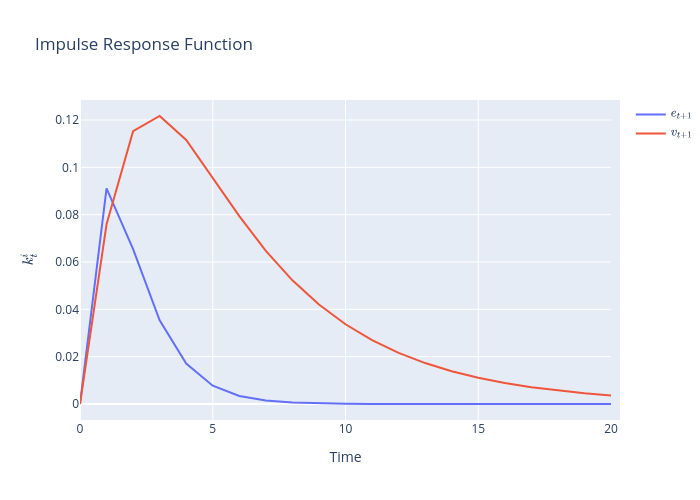

<!DOCTYPE html>

<html>
  <head>
    <meta charset="utf-8" />
    <meta name="viewport" content="width=device-width, initial-scale=1.0" />
    <title>32. Knowing the Forecasts of Others &#8212; Advanced Quantitative Economics with Python</title>
    <script src="https://unpkg.com/@popperjs/core@2.9.2/dist/umd/popper.min.js"></script>
    <script src="https://unpkg.com/tippy.js@6.3.1/dist/tippy-bundle.umd.js"></script>
    <script src="https://cdn.jsdelivr.net/npm/feather-icons/dist/feather.min.js"></script>
    
        <script>
            MathJax = {
            loader: {load: ['[tex]/boldsymbol']},
            tex: {
                packages: {'[+]': ['boldsymbol']},
                inlineMath: [['$', '$'], ['\\(', '\\)']],
                processEscapes: true,
                macros: {
                    "argmax" : "arg\\,max",
                    "argmin" : "arg\\,min",
                    "col"    : "col",
                    "Span"   :  "span",
                    "epsilon": "\\varepsilon",
                    "EE": "\\mathbb{E}",
                    "PP": "\\mathbb{P}",
                    "RR": "\\mathbb{R}",
                    "NN": "\\mathbb{N}",
                    "ZZ": "\\mathbb{Z}",
                    "aA": "\\mathcal{A}",
                    "bB": "\\mathcal{B}",
                    "cC": "\\mathcal{C}",
                    "dD": "\\mathcal{D}",
                    "eE": "\\mathcal{E}",
                    "fF": "\\mathcal{F}",
                    "gG": "\\mathcal{G}",
                    "hH": "\\mathcal{H}",
                }
            },
            svg: {
                fontCache: 'global',
                scale: 0.92,
                displayAlign: "center",
            },
            };
        </script>
    
    
    
  <link href="_static/css/theme.css" rel="stylesheet" />
  <link href="_static/css/index.c5995385ac14fb8791e8eb36b4908be2.css" rel="stylesheet" />

    
  <link rel="stylesheet"
    href="_static/vendor/fontawesome/5.13.0/css/all.min.css">
  <link rel="preload" as="font" type="font/woff2" crossorigin
    href="_static/vendor/fontawesome/5.13.0/webfonts/fa-solid-900.woff2">
  <link rel="preload" as="font" type="font/woff2" crossorigin
    href="_static/vendor/fontawesome/5.13.0/webfonts/fa-brands-400.woff2">

    
      

    
    <link rel="stylesheet" href="_static/quantecon-book-theme.857ff391aaabaeb8c161d2309c375fe6.css" type="text/css" />
    <link rel="stylesheet" href="_static/pygments.css" type="text/css" />
    <link rel="stylesheet" type="text/css" href="_static/togglebutton.css" />
    <link rel="stylesheet" type="text/css" href="_static/copybutton.css" />
    <link rel="stylesheet" type="text/css" href="_static/mystnb.css" />
    <link rel="stylesheet" type="text/css" href="_static/sphinx-thebe.css" />
    <link rel="stylesheet" type="text/css" href="_static/panels-main.c949a650a448cc0ae9fd3441c0e17fb0.css" />
    <link rel="stylesheet" type="text/css" href="_static/panels-variables.06eb56fa6e07937060861dad626602ad.css" />
    
  <link rel="preload" as="script" href="_static/js/index.1c5a1a01449ed65a7b51.js">


    <script id="documentation_options" data-url_root="./" src="_static/documentation_options.js"></script>
    <script src="_static/jquery.js"></script>
    <script src="_static/underscore.js"></script>
    <script src="_static/doctools.js"></script>
    <script src="_static/language_data.js"></script>
    <script src="_static/togglebutton.js"></script>
    <script src="_static/clipboard.min.js"></script>
    <script src="_static/copybutton.js"></script>
    <script >var togglebuttonSelector = '.toggle, .admonition.dropdown, .tag_hide_input div.cell_input, .tag_hide-input div.cell_input, .tag_hide_output div.cell_output, .tag_hide-output div.cell_output, .tag_hide_cell.cell, .tag_hide-cell.cell';</script>
    <script src="_static/sphinx-book-theme.12a9622fbb08dcb3a2a40b2c02b83a57.js"></script>
    <script src="_static/quantecon-book-theme.76bf49d7bbc59738cdb03766fad654af.js"></script>
    <script async="async" src="https://cdn.jsdelivr.net/npm/mathjax@3/es5/tex-mml-svg.js"></script>
    <script type="text/x-mathjax-config">MathJax.Hub.Config({"TeX": {"Macros": {"argmax": "arg\\,max", "argmin": "arg\\,min"}}, "tex2jax": {"inlineMath": [["\\(", "\\)"]], "displayMath": [["\\[", "\\]"]], "processRefs": false, "processEnvironments": false}})</script>
    <script src="https://cdnjs.cloudflare.com/ajax/libs/require.js/2.3.4/require.min.js"></script>
    <script src="https://unpkg.com/@jupyter-widgets/html-manager@^0.18.0/dist/embed-amd.js"></script>
    <script async="async" src="https://unpkg.com/thebe@0.5.1/lib/index.js"></script>
    <script >
        const thebe_selector = ".thebe"
        const thebe_selector_input = "pre"
        const thebe_selector_output = ".output"
    </script>
    <script async="async" src="_static/sphinx-thebe.js"></script>
    <script async="async" src="https://unpkg.com/thebe@0.5.1/lib/index.js"></script>
    <script >
        const thebe_selector = ".thebe"
        const thebe_selector_input = "pre"
        const thebe_selector_output = ".output"
    </script>
    <script async="async" src="_static/sphinx-thebe.js"></script>
    <script async="async" src="https://unpkg.com/thebe@0.5.1/lib/index.js"></script>
    <script >
        const thebe_selector = ".thebe"
        const thebe_selector_input = "pre"
        const thebe_selector_output = ".output"
    </script>
    <script async="async" src="_static/sphinx-thebe.js"></script>
    <script async="async" src="https://unpkg.com/thebe@0.5.1/lib/index.js"></script>
    <script >
        const thebe_selector = ".thebe"
        const thebe_selector_input = "pre"
        const thebe_selector_output = ".output"
    </script>
    <script async="async" src="_static/sphinx-thebe.js"></script>
    <script async="async" src="https://unpkg.com/thebe@0.5.1/lib/index.js"></script>
    <script >
        const thebe_selector = ".thebe"
        const thebe_selector_input = "pre"
        const thebe_selector_output = ".output"
    </script>
    <script async="async" src="_static/sphinx-thebe.js"></script>
    <script async="async" src="https://unpkg.com/thebe@0.5.1/lib/index.js"></script>
    <script >
        const thebe_selector = ".thebe"
        const thebe_selector_input = "pre"
        const thebe_selector_output = ".output"
    </script>
    <script async="async" src="_static/sphinx-thebe.js"></script>
    <script async="async" src="https://unpkg.com/thebe@0.5.1/lib/index.js"></script>
    <script >
        const thebe_selector = ".thebe"
        const thebe_selector_input = "pre"
        const thebe_selector_output = ".output"
    </script>
    <script async="async" src="_static/sphinx-thebe.js"></script>
    <script async="async" src="https://unpkg.com/thebe@0.5.1/lib/index.js"></script>
    <script >
        const thebe_selector = ".thebe"
        const thebe_selector_input = "pre"
        const thebe_selector_output = ".output"
    </script>
    <script async="async" src="_static/sphinx-thebe.js"></script>
    <script async="async" src="https://unpkg.com/thebe@0.5.1/lib/index.js"></script>
    <script >
        const thebe_selector = ".thebe"
        const thebe_selector_input = "pre"
        const thebe_selector_output = ".output"
    </script>
    <script async="async" src="_static/sphinx-thebe.js"></script>
    <script async="async" src="https://unpkg.com/thebe@0.5.1/lib/index.js"></script>
    <script >
        const thebe_selector = ".thebe"
        const thebe_selector_input = "pre"
        const thebe_selector_output = ".output"
    </script>
    <script async="async" src="_static/sphinx-thebe.js"></script>
    <script async="async" src="https://unpkg.com/thebe@0.5.1/lib/index.js"></script>
    <script >
        const thebe_selector = ".thebe"
        const thebe_selector_input = "pre"
        const thebe_selector_output = ".output"
    </script>
    <script async="async" src="_static/sphinx-thebe.js"></script>
    <script async="async" src="https://unpkg.com/thebe@0.5.1/lib/index.js"></script>
    <script >
        const thebe_selector = ".thebe"
        const thebe_selector_input = "pre"
        const thebe_selector_output = ".output"
    </script>
    <script async="async" src="_static/sphinx-thebe.js"></script>
    <script async="async" src="https://unpkg.com/thebe@0.5.1/lib/index.js"></script>
    <script >
        const thebe_selector = ".thebe"
        const thebe_selector_input = "pre"
        const thebe_selector_output = ".output"
    </script>
    <script async="async" src="_static/sphinx-thebe.js"></script>
    <script async="async" src="https://unpkg.com/thebe@0.5.1/lib/index.js"></script>
    <script >
        const thebe_selector = ".thebe"
        const thebe_selector_input = "pre"
        const thebe_selector_output = ".output"
    </script>
    <script async="async" src="_static/sphinx-thebe.js"></script>
    <script async="async" src="https://unpkg.com/thebe@0.5.1/lib/index.js"></script>
    <script >
        const thebe_selector = ".thebe"
        const thebe_selector_input = "pre"
        const thebe_selector_output = ".output"
    </script>
    <script async="async" src="_static/sphinx-thebe.js"></script>
    <script async="async" src="https://unpkg.com/thebe@0.5.1/lib/index.js"></script>
    <script >
        const thebe_selector = ".thebe"
        const thebe_selector_input = "pre"
        const thebe_selector_output = ".output"
    </script>
    <script async="async" src="_static/sphinx-thebe.js"></script>
    <script async="async" src="https://unpkg.com/thebe@0.5.1/lib/index.js"></script>
    <script >
        const thebe_selector = ".thebe"
        const thebe_selector_input = "pre"
        const thebe_selector_output = ".output"
    </script>
    <script async="async" src="_static/sphinx-thebe.js"></script>
    <script async="async" src="https://unpkg.com/thebe@0.5.1/lib/index.js"></script>
    <script >
        const thebe_selector = ".thebe"
        const thebe_selector_input = "pre"
        const thebe_selector_output = ".output"
    </script>
    <script async="async" src="_static/sphinx-thebe.js"></script>
    <script async="async" src="https://unpkg.com/thebe@0.5.1/lib/index.js"></script>
    <script >
        const thebe_selector = ".thebe"
        const thebe_selector_input = "pre"
        const thebe_selector_output = ".output"
    </script>
    <script async="async" src="_static/sphinx-thebe.js"></script>
    <script async="async" src="https://unpkg.com/thebe@0.5.1/lib/index.js"></script>
    <script >
        const thebe_selector = ".thebe"
        const thebe_selector_input = "pre"
        const thebe_selector_output = ".output"
    </script>
    <script async="async" src="_static/sphinx-thebe.js"></script>
    <script async="async" src="https://unpkg.com/thebe@0.5.1/lib/index.js"></script>
    <script >
        const thebe_selector = ".thebe"
        const thebe_selector_input = "pre"
        const thebe_selector_output = ".output"
    </script>
    <script async="async" src="_static/sphinx-thebe.js"></script>
    <script async="async" src="https://unpkg.com/thebe@0.5.1/lib/index.js"></script>
    <script >
        const thebe_selector = ".thebe"
        const thebe_selector_input = "pre"
        const thebe_selector_output = ".output"
    </script>
    <script async="async" src="_static/sphinx-thebe.js"></script>
    <script async="async" src="https://unpkg.com/thebe@0.5.1/lib/index.js"></script>
    <script >
        const thebe_selector = ".thebe"
        const thebe_selector_input = "pre"
        const thebe_selector_output = ".output"
    </script>
    <script async="async" src="_static/sphinx-thebe.js"></script>
    <script async="async" src="https://unpkg.com/thebe@0.5.1/lib/index.js"></script>
    <script >
        const thebe_selector = ".thebe"
        const thebe_selector_input = "pre"
        const thebe_selector_output = ".output"
    </script>
    <script async="async" src="_static/sphinx-thebe.js"></script>
    <script async="async" src="https://unpkg.com/thebe@0.5.1/lib/index.js"></script>
    <script >
        const thebe_selector = ".thebe"
        const thebe_selector_input = "pre"
        const thebe_selector_output = ".output"
    </script>
    <script async="async" src="_static/sphinx-thebe.js"></script>
    <link rel="canonical" href="https://python-advanced.quantecon.org/knowing_forecasts_of_others.html" />
    <link rel="index" title="Index" href="genindex.html" />
    <link rel="search" title="Search" href="search.html" />
    <link rel="next" title="33. Asset Pricing II: The Lucas Asset Pricing Model" href="lucas_model.html" />
    <link rel="prev" title="31. Classical Prediction and Filtering With Linear Algebra" href="classical_filtering.html" />

<!-- Normal Meta Tags -->
<meta name="author" context="Thomas J. Sargent &amp; John Stachurski" />
<meta name="keywords" content="Python, QuantEcon, Quantitative Economics, Economics, Sloan, Alfred P. Sloan Foundation, Tom J. Sargent, John Stachurski" />
<meta name="description" content=This website presents a set of lectures on advanced quantitative economic modeling, designed and written by Thomas J. Sargent and John Stachurski. />

<!-- Twitter tags -->
<meta name="twitter:card" content="summary" />
<meta name="twitter:site" content="@quantecon" />
<meta name="twitter:title" content="Knowing the Forecasts of Others"/>
<meta name="twitter:description" content="This website presents a set of lectures on advanced quantitative economic modeling, designed and written by Thomas J. Sargent and John Stachurski.">
<meta name="twitter:creator" content="@quantecon">
<meta name="twitter:image" content="https://assets.quantecon.org/img/qe-twitter-logo.png">

<!-- Opengraph tags -->
<meta property="og:title" content="Knowing the Forecasts of Others" />
<meta property="og:type" content="website" />
<meta property="og:url" content="https://python-advanced.quantecon.org/knowing_forecasts_of_others.html" />
<meta property="og:image" content="https://assets.quantecon.org/img/qe-og-logo.png" />
<meta property="og:description" content="This website presents a set of lectures on advanced quantitative economic modeling, designed and written by Thomas J. Sargent and John Stachurski." />
<meta property="og:site_name" content="Advanced Quantitative Economics with Python" />
<meta name="theme-color" content="#ffffff" />

  </head>
<body>


    <span id="top"></span>

    <div class="wrapper">

        <div class="main">

            <div class="page" id=knowing_forecasts_of_others>

                <div class="page__toc">

                    <div class="inner">

                        
                        <div class="page__toc-header">
                            On this page
                        </div>


                        <nav id="bd-toc-nav" class="page__toc-nav">
                            <ul class="visible nav section-nav flex-column">
 <li class="toc-h2 nav-item toc-entry">
  <a class="reference internal nav-link" href="#introduction">
   32.1. Introduction
  </a>
  <ul class="nav section-nav flex-column">
   <li class="toc-h3 nav-item toc-entry">
    <a class="reference internal nav-link" href="#a-sequence-of-models">
     32.1.1. A Sequence of Models
    </a>
   </li>
  </ul>
 </li>
 <li class="toc-h2 nav-item toc-entry">
  <a class="reference internal nav-link" href="#the-setting">
   32.2. The Setting
  </a>
 </li>
 <li class="toc-h2 nav-item toc-entry">
  <a class="reference internal nav-link" href="#tactics">
   32.3. Tactics
  </a>
 </li>
 <li class="toc-h2 nav-item toc-entry">
  <a class="reference internal nav-link" href="#equilibrium-conditions">
   32.4. Equilibrium conditions
  </a>
  <ul class="nav section-nav flex-column">
   <li class="toc-h3 nav-item toc-entry">
    <a class="reference internal nav-link" href="#equilibrium-under-perfect-foresight">
     32.4.1. Equilibrium under perfect foresight
    </a>
   </li>
  </ul>
 </li>
 <li class="toc-h2 nav-item toc-entry">
  <a class="reference internal nav-link" href="#equilibrium-with-theta-t-stochastic-but-observed-at-t">
   32.5. Equilibrium with
   <span class="math notranslate nohighlight">
    \(\theta_t\)
   </span>
   stochastic but observed at
   <span class="math notranslate nohighlight">
    \(t\)
   </span>
  </a>
  <ul class="nav section-nav flex-column">
   <li class="toc-h3 nav-item toc-entry">
    <a class="reference internal nav-link" href="#filtering">
     32.5.1. Filtering
    </a>
    <ul class="nav section-nav flex-column">
     <li class="toc-h4 nav-item toc-entry">
      <a class="reference internal nav-link" href="#one-noisy-signal">
       32.5.1.1. One noisy signal
      </a>
     </li>
     <li class="toc-h4 nav-item toc-entry">
      <a class="reference internal nav-link" href="#theta-reconstruction-error">
       32.5.1.2.
       <span class="math notranslate nohighlight">
        \(\theta\)
       </span>
       -reconstruction error:
      </a>
     </li>
    </ul>
   </li>
   <li class="toc-h3 nav-item toc-entry">
    <a class="reference internal nav-link" href="#two-noisy-signals">
     32.5.2. Two noisy signals
    </a>
   </li>
  </ul>
 </li>
 <li class="toc-h2 nav-item toc-entry">
  <a class="reference internal nav-link" href="#guess-and-verify-tactic">
   32.6. Guess-and-verify tactic
  </a>
 </li>
 <li class="toc-h2 nav-item toc-entry">
  <a class="reference internal nav-link" href="#equilibrium-with-one-signal-on-theta-t">
   32.7. Equilibrium with one signal on
   <span class="math notranslate nohighlight">
    \(\theta_t\)
   </span>
  </a>
  <ul class="nav section-nav flex-column">
   <li class="toc-h3 nav-item toc-entry">
    <a class="reference internal nav-link" href="#step-1-solve-for-tilde-lambda-and-lambda">
     32.7.1. Step 1: Solve for
     <span class="math notranslate nohighlight">
      \(\tilde{\lambda}\)
     </span>
     and
     <span class="math notranslate nohighlight">
      \(\lambda\)
     </span>
    </a>
   </li>
   <li class="toc-h3 nav-item toc-entry">
    <a class="reference internal nav-link" href="#step-2-solve-for-p">
     32.7.2. Step 2: Solve for
     <span class="math notranslate nohighlight">
      \(p\)
     </span>
    </a>
   </li>
   <li class="toc-h3 nav-item toc-entry">
    <a class="reference internal nav-link" href="#step-3-represent-the-system-using-quantecon-linearstatespace">
     32.7.3. Step 3: Represent the system using
     <code class="docutils literal notranslate">
      <span class="pre">
       quantecon.LinearStateSpace
      </span>
     </code>
    </a>
   </li>
   <li class="toc-h3 nav-item toc-entry">
    <a class="reference internal nav-link" href="#step-4-compute-impulse-response-functions">
     32.7.4. Step 4: Compute impulse response functions
    </a>
   </li>
   <li class="toc-h3 nav-item toc-entry">
    <a class="reference internal nav-link" href="#step-5-compute-stationary-covariance-matrices-and-population-regressions">
     32.7.5. Step 5: Compute stationary covariance matrices and population regressions
    </a>
   </li>
  </ul>
 </li>
 <li class="toc-h2 nav-item toc-entry">
  <a class="reference internal nav-link" href="#equilibrium-with-two-noisy-signals-on-theta-t">
   32.8. Equilibrium with two noisy signals on
   <span class="math notranslate nohighlight">
    \(\theta_t\)
   </span>
  </a>
 </li>
 <li class="toc-h2 nav-item toc-entry">
  <a class="reference internal nav-link" href="#key-step">
   32.9. Key step
  </a>
 </li>
 <li class="toc-h2 nav-item toc-entry">
  <a class="reference internal nav-link" href="#comparison-of-the-two-signal-structures">
   32.10. Comparison of the two signal structures
  </a>
 </li>
 <li class="toc-h2 nav-item toc-entry">
  <a class="reference internal nav-link" href="#notes-on-history-of-the-problem">
   32.11. Notes on History of the Problem
  </a>
  <ul class="nav section-nav flex-column">
   <li class="toc-h3 nav-item toc-entry">
    <a class="reference internal nav-link" href="#further-historical-remarks">
     32.11.1. Further historical remarks
    </a>
   </li>
  </ul>
 </li>
</ul>

                            <p class="logo">
                                
                                    
                                    <a href=https://quantecon.org></a>
                                    
                                
                            </p>

                            <p class="powered">Powered by <a href="https://jupyterbook.org/">Jupyter Book</a></p>

                        </nav>

                        <div class="page__toc-footer">
                            
                            
                            <p><a href="#top"><strong>Back to top</strong></a></p>
                        </div>

                    </div>

                </div>

                <div class="page__header">

                    <div class="page__header-copy">

                        <p class="page__header-heading"><a href="intro.html">Advanced Quantitative Economics with Python</a></p>

                        <p class="page__header-subheading">Knowing the Forecasts of Others</p>

                    </div>

                    <p class="page__header-authors">Thomas J. Sargent & John Stachurski</p>

                </div> <!-- .page__header -->


                
                <main class="page__content" role="main">
                    
                    <div>
                        
  <div id="qe-notebook-header" align="right" style="text-align:right;">
        <a href="https://quantecon.org/" title="quantecon.org">
                
        </a>
</div><div class="section" id="knowing-the-forecasts-of-others">
<h1><a class="toc-backref" href="#id43"><span class="section-number">32. </span>Knowing the Forecasts of Others</a><a class="headerlink" href="#knowing-the-forecasts-of-others" title="Permalink to this headline">¶</a></h1>
<div class="contents topic" id="contents">
<p class="topic-title">Contents</p>
<ul class="simple">
<li><p><a class="reference internal" href="#knowing-the-forecasts-of-others" id="id43">Knowing the Forecasts of Others</a></p>
<ul>
<li><p><a class="reference internal" href="#introduction" id="id44">Introduction</a></p></li>
<li><p><a class="reference internal" href="#the-setting" id="id45">The Setting</a></p></li>
<li><p><a class="reference internal" href="#tactics" id="id46">Tactics</a></p></li>
<li><p><a class="reference internal" href="#equilibrium-conditions" id="id47">Equilibrium conditions</a></p></li>
<li><p><a class="reference internal" href="#equilibrium-with-theta-t-stochastic-but-observed-at-t" id="id48">Equilibrium with <span class="math notranslate nohighlight">\(\theta_t\)</span> stochastic but observed at <span class="math notranslate nohighlight">\(t\)</span></a></p></li>
<li><p><a class="reference internal" href="#guess-and-verify-tactic" id="id49">Guess-and-verify tactic</a></p></li>
<li><p><a class="reference internal" href="#equilibrium-with-one-signal-on-theta-t" id="id50">Equilibrium with one signal on <span class="math notranslate nohighlight">\(\theta_t\)</span></a></p></li>
<li><p><a class="reference internal" href="#equilibrium-with-two-noisy-signals-on-theta-t" id="id51">Equilibrium with two noisy signals on <span class="math notranslate nohighlight">\(\theta_t\)</span></a></p></li>
<li><p><a class="reference internal" href="#key-step" id="id52">Key step</a></p></li>
<li><p><a class="reference internal" href="#comparison-of-the-two-signal-structures" id="id53">Comparison of the two signal structures</a></p></li>
<li><p><a class="reference internal" href="#notes-on-history-of-the-problem" id="id54">Notes on History of the Problem</a></p></li>
</ul>
</li>
</ul>
</div>
<p>In addition to what’s in Anaconda, this lecture will need the following libraries:</p>
<div class="cell tag_hide-output docutils container">
<div class="cell_input docutils container">
<div class="highlight-ipython3 notranslate"><div class="highlight"><pre><span></span><span class="o">!</span>pip install --upgrade quantecon
<span class="o">!</span>conda install -y -c plotly plotly plotly-orca
</pre></div>
</div>
</div>
<div class="cell_output docutils container">
<div class="output stream highlight-myst-ansi notranslate"><div class="highlight"><pre><span></span>Requirement already up-to-date: quantecon in /usr/share/miniconda3/envs/quantecon/lib/python3.8/site-packages (0.5.1)
Requirement already satisfied, skipping upgrade: numba&gt;=0.38 in /usr/share/miniconda3/envs/quantecon/lib/python3.8/site-packages (from quantecon) (0.51.2)
Requirement already satisfied, skipping upgrade: scipy&gt;=1.0.0 in /usr/share/miniconda3/envs/quantecon/lib/python3.8/site-packages (from quantecon) (1.5.2)
Requirement already satisfied, skipping upgrade: numpy in /usr/share/miniconda3/envs/quantecon/lib/python3.8/site-packages (from quantecon) (1.19.2)
Requirement already satisfied, skipping upgrade: requests in /usr/share/miniconda3/envs/quantecon/lib/python3.8/site-packages (from quantecon) (2.24.0)
Requirement already satisfied, skipping upgrade: sympy in /usr/share/miniconda3/envs/quantecon/lib/python3.8/site-packages (from quantecon) (1.6.2)
Requirement already satisfied, skipping upgrade: setuptools in /usr/share/miniconda3/envs/quantecon/lib/python3.8/site-packages (from numba&gt;=0.38-&gt;quantecon) (50.3.1.post20201107)
</pre></div>
</div>
<div class="output stream highlight-myst-ansi notranslate"><div class="highlight"><pre><span></span>Requirement already satisfied, skipping upgrade: llvmlite&lt;0.35,&gt;=0.34.0.dev0 in /usr/share/miniconda3/envs/quantecon/lib/python3.8/site-packages (from numba&gt;=0.38-&gt;quantecon) (0.34.0)
Requirement already satisfied, skipping upgrade: idna&lt;3,&gt;=2.5 in /usr/share/miniconda3/envs/quantecon/lib/python3.8/site-packages (from requests-&gt;quantecon) (2.10)
Requirement already satisfied, skipping upgrade: urllib3!=1.25.0,!=1.25.1,&lt;1.26,&gt;=1.21.1 in /usr/share/miniconda3/envs/quantecon/lib/python3.8/site-packages (from requests-&gt;quantecon) (1.25.11)
Requirement already satisfied, skipping upgrade: certifi&gt;=2017.4.17 in /usr/share/miniconda3/envs/quantecon/lib/python3.8/site-packages (from requests-&gt;quantecon) (2020.6.20)
Requirement already satisfied, skipping upgrade: chardet&lt;4,&gt;=3.0.2 in /usr/share/miniconda3/envs/quantecon/lib/python3.8/site-packages (from requests-&gt;quantecon) (3.0.4)
Requirement already satisfied, skipping upgrade: mpmath&gt;=0.19 in /usr/share/miniconda3/envs/quantecon/lib/python3.8/site-packages (from sympy-&gt;quantecon) (1.1.0)
</pre></div>
</div>
<div class="output stream highlight-myst-ansi notranslate"><div class="highlight"><pre><span></span>Collecting package metadata (current_repodata.json): - 
</pre></div>
</div>
<div class="output stream highlight-myst-ansi notranslate"><div class="highlight"><pre><span></span>\ 
</pre></div>
</div>
<div class="output stream highlight-myst-ansi notranslate"><div class="highlight"><pre><span></span>| 
</pre></div>
</div>
<div class="output stream highlight-myst-ansi notranslate"><div class="highlight"><pre><span></span>/ 
</pre></div>
</div>
<div class="output stream highlight-myst-ansi notranslate"><div class="highlight"><pre><span></span>- 
</pre></div>
</div>
<div class="output stream highlight-myst-ansi notranslate"><div class="highlight"><pre><span></span>\ 
</pre></div>
</div>
<div class="output stream highlight-myst-ansi notranslate"><div class="highlight"><pre><span></span>| 
</pre></div>
</div>
<div class="output stream highlight-myst-ansi notranslate"><div class="highlight"><pre><span></span>/ 
</pre></div>
</div>
<div class="output stream highlight-myst-ansi notranslate"><div class="highlight"><pre><span></span>- 
</pre></div>
</div>
<div class="output stream highlight-myst-ansi notranslate"><div class="highlight"><pre><span></span>\ 
</pre></div>
</div>
<div class="output stream highlight-myst-ansi notranslate"><div class="highlight"><pre><span></span>| 
</pre></div>
</div>
<div class="output stream highlight-myst-ansi notranslate"><div class="highlight"><pre><span></span>done
Solving environment: - 
</pre></div>
</div>
<div class="output stream highlight-myst-ansi notranslate"><div class="highlight"><pre><span></span>\ 
</pre></div>
</div>
<div class="output stream highlight-myst-ansi notranslate"><div class="highlight"><pre><span></span>| 
</pre></div>
</div>
<div class="output stream highlight-myst-ansi notranslate"><div class="highlight"><pre><span></span>/ 
</pre></div>
</div>
<div class="output stream highlight-myst-ansi notranslate"><div class="highlight"><pre><span></span>- 
</pre></div>
</div>
<div class="output stream highlight-myst-ansi notranslate"><div class="highlight"><pre><span></span>\ 
</pre></div>
</div>
<div class="output stream highlight-myst-ansi notranslate"><div class="highlight"><pre><span></span>| 
</pre></div>
</div>
<div class="output stream highlight-myst-ansi notranslate"><div class="highlight"><pre><span></span>/ 
</pre></div>
</div>
<div class="output stream highlight-myst-ansi notranslate"><div class="highlight"><pre><span></span>- 
</pre></div>
</div>
<div class="output stream highlight-myst-ansi notranslate"><div class="highlight"><pre><span></span>\ 
</pre></div>
</div>
<div class="output stream highlight-myst-ansi notranslate"><div class="highlight"><pre><span></span>| 
</pre></div>
</div>
<div class="output stream highlight-myst-ansi notranslate"><div class="highlight"><pre><span></span>/ 
</pre></div>
</div>
<div class="output stream highlight-myst-ansi notranslate"><div class="highlight"><pre><span></span>- 
</pre></div>
</div>
<div class="output stream highlight-myst-ansi notranslate"><div class="highlight"><pre><span></span>\ 
</pre></div>
</div>
<div class="output stream highlight-myst-ansi notranslate"><div class="highlight"><pre><span></span>| 
</pre></div>
</div>
<div class="output stream highlight-myst-ansi notranslate"><div class="highlight"><pre><span></span>/ 
</pre></div>
</div>
<div class="output stream highlight-myst-ansi notranslate"><div class="highlight"><pre><span></span>- 
</pre></div>
</div>
<div class="output stream highlight-myst-ansi notranslate"><div class="highlight"><pre><span></span>\ 
</pre></div>
</div>
<div class="output stream highlight-myst-ansi notranslate"><div class="highlight"><pre><span></span>| 
</pre></div>
</div>
<div class="output stream highlight-myst-ansi notranslate"><div class="highlight"><pre><span></span>/ 
</pre></div>
</div>
<div class="output stream highlight-myst-ansi notranslate"><div class="highlight"><pre><span></span>- 
</pre></div>
</div>
<div class="output stream highlight-myst-ansi notranslate"><div class="highlight"><pre><span></span>\ 
</pre></div>
</div>
<div class="output stream highlight-myst-ansi notranslate"><div class="highlight"><pre><span></span>| 
</pre></div>
</div>
<div class="output stream highlight-myst-ansi notranslate"><div class="highlight"><pre><span></span>/ 
</pre></div>
</div>
<div class="output stream highlight-myst-ansi notranslate"><div class="highlight"><pre><span></span>- 
</pre></div>
</div>
<div class="output stream highlight-myst-ansi notranslate"><div class="highlight"><pre><span></span>\ 
</pre></div>
</div>
<div class="output stream highlight-myst-ansi notranslate"><div class="highlight"><pre><span></span>| 
</pre></div>
</div>
<div class="output stream highlight-myst-ansi notranslate"><div class="highlight"><pre><span></span>/ 
</pre></div>
</div>
<div class="output stream highlight-myst-ansi notranslate"><div class="highlight"><pre><span></span>- 
</pre></div>
</div>
<div class="output stream highlight-myst-ansi notranslate"><div class="highlight"><pre><span></span>\ 
</pre></div>
</div>
<div class="output stream highlight-myst-ansi notranslate"><div class="highlight"><pre><span></span>done
</pre></div>
</div>
<div class="output stream highlight-myst-ansi notranslate"><div class="highlight"><pre><span></span># All requested packages already installed.
</pre></div>
</div>
</div>
</div>
<div class="section" id="introduction">
<h2><a class="toc-backref" href="#id44"><span class="section-number">32.1. </span>Introduction</a><a class="headerlink" href="#introduction" title="Permalink to this headline">¶</a></h2>
<p>Robert E. Lucas, Jr. <span id="id1">[<a class="reference internal" href="zreferences.html#id3">REL75</a>]</span>, Kenneth Kasa  <span id="id2">[<a class="reference internal" href="zreferences.html#id6">Kas00</a>]</span>, and Robert Townsend
<span id="id3">[<a class="reference internal" href="zreferences.html#id7">Tow83</a>]</span> showed that giving decision makers  incentives to infer persistent hidden  state
variables from equilibrium prices and quantities can
elongate and amplify impulse responses to aggregate
shocks in business cycle models.</p>
<p>Townsend <span id="id4">[<a class="reference internal" href="zreferences.html#id7">Tow83</a>]</span>
noted  that  such incentives can naturally
induce decision makers to want  to forecast the forecast of others.</p>
<p>This theme has been pursued and extended in analyses in which
decision makers’ imperfect information forces them into pursuing an
infinite recursion of forming beliefs about the beliefs of other
(e.g., <span id="id5">[<a class="reference internal" href="zreferences.html#id10">AMS02</a>]</span>).</p>
<p>Lucas <span id="id6">[<a class="reference internal" href="zreferences.html#id3">REL75</a>]</span> side stepped having decision makers forecast the
forecasts of other decision makers by assuming that they simply pool their
information before forecasting.</p>
<p>A <strong>pooling equilibrium</strong> like Lucas’s plays a prominent role in this lecture.</p>
<p>Because he didn’t assume such pooling, <span id="id7">[<a class="reference internal" href="zreferences.html#id7">Tow83</a>]</span>
confronted the forecasting the forecasts of others problem.</p>
<p>To formulate the  problem recursively required that Townsend define  decision maker’s <strong>state</strong> vector.</p>
<p>Townsend concluded that his original  model required an intractable infinite dimensional  state space.</p>
<p>Therefore, he constructed a more manageable approximating model in which the hidden Markov component of
the demand shock is
revealed to all firms after a fixed and finite number of periods.</p>
<p>In this lecture, as yet another instance of the theme that <strong>finding the state is an art</strong>,
we show how to formulate Townsend’s original model in terms of a low-dimensional state space.</p>
<p>By doing so, we show that Townsend’s model shares equilibrium prices and quantities with those   that
prevail in a pooling equilibrium.</p>
<p>That finding emerged from a line of research about  Townsend’s model that  culminated in
<span id="id8">[<a class="reference internal" href="zreferences.html#id4">PS05</a>]</span> that built on <span id="id9">[<a class="reference internal" href="zreferences.html#id5">PCL86</a>]</span>.</p>
<p>However, rather than deploying the <span id="id10">[<a class="reference internal" href="zreferences.html#id5">PCL86</a>]</span> machinery here, we shall rely instead on a sneaky
<strong>guess-and-verify</strong> tactic.</p>
<ul class="simple">
<li><p>We compute a pooling equilibrium and represent it as an instance of  a linear  state-space system provided by
the Python class <code class="docutils literal notranslate"><span class="pre">quantecon.LinearStateSpace</span></code>.</p></li>
<li><p>Leaving the state-transition equation for the pooling equilibrium unaltered, we alter the observation vector
for a firm to what it in in Townsend’s original model. So rather than directly observing the signal received by
firms in the other industry, a firm sees the equilibrium price
of the good produced by the other industry.</p></li>
<li><p>We compute a population linear least squares regression of the noisy signal that firms in the other
industry receive in a pooling equilibrium on time <span class="math notranslate nohighlight">\(t\)</span> information that a firm receives in Townsend’s
original model. The <span class="math notranslate nohighlight">\(R^2\)</span> in this regression equals <span class="math notranslate nohighlight">\(1\)</span>.  That verifies that a firm’s information
set in Townsend’s original model equals its information set in a pooling equilibrium. Therefore, equilibrium
prices and quantities in Townsend’s original model equal those in a pooling equilibrium.</p></li>
</ul>
<div class="section" id="a-sequence-of-models">
<h3><span class="section-number">32.1.1. </span>A Sequence of Models<a class="headerlink" href="#a-sequence-of-models" title="Permalink to this headline">¶</a></h3>
<p>We proceed by describing  a sequence of models of two industries that are linked in a
single way: shocks to the demand curves for their products have a common
component.</p>
<p>The models are simplified versions   of Townsend’s  <span id="id11">[<a class="reference internal" href="zreferences.html#id7">Tow83</a>]</span>.</p>
<p>Townsend’s is a model of a rational expectations equilibrium in which firms confront
the problem  <strong>forecasting the forecasts of others</strong>.</p>
<p>In Townsend’s model, firms condition  their forecasts on observed endogenous variables whose equilibrium laws of motion
are determined by their own forecasting functions.</p>
<p>We start with model  components that we shall progressively assemble in  ways that can help us to appreciate the structure of a
<strong>pooling equilibrium</strong>  that ultimately concerns us.</p>
<p>While keeping other aspects of the model the same, we shall study
consequences of alternative assumptions about what decision makers
observe.</p>
<p>Technically, this lecture deploys concepts and tools that appear
in  <a class="reference external" href="https://python-intro.quantecon.org/kalman.html">First Look at Kalman Filter</a> and
<a class="reference external" href="https://python-intro.quantecon.org/rational_expectations.html">Rational Expectations Equilibrium</a>.</p>
</div>
</div>
<div class="section" id="the-setting">
<h2><a class="toc-backref" href="#id45"><span class="section-number">32.2. </span>The Setting</a><a class="headerlink" href="#the-setting" title="Permalink to this headline">¶</a></h2>
<p>We cast all variables in terms of deviations from means.</p>
<p>Therefore,  we omit constants from inverse demand curves
and other functions.</p>
<p>Firms in each of two industries <span class="math notranslate nohighlight">\(i=1,2\)</span> use a single factor of
production, capital <span class="math notranslate nohighlight">\(k_t^i\)</span>, to produce output of a single good,
<span class="math notranslate nohighlight">\(y_t^i\)</span>.</p>
<p>Firms bear quadratic costs of adjusting their capital stocks.</p>
<p>A representative firm in industry <span class="math notranslate nohighlight">\(i\)</span> has production function
<span class="math notranslate nohighlight">\(y_t^i = f k_t^i\)</span>, <span class="math notranslate nohighlight">\(f &gt;0\)</span>, acts as a price taker with
respect to output price <span class="math notranslate nohighlight">\(P_t^i\)</span>, and maximizes</p>
<div class="math notranslate nohighlight" id="equation-town1">
<span class="eqno">(32.1)<a class="headerlink" href="#equation-town1" title="Permalink to this equation">¶</a></span>\[\begin{aligned}
  E_0^i \sum_{t=0}^\infty \beta^t \left\{ P_t^i f k_t^i - .5
     h (k_{t+1}^i - k_t^i)^2 \right\} ,
  \quad h &gt;0  .\end{aligned}\]</div>
<p>Demand in industry <span class="math notranslate nohighlight">\(i\)</span> is described by the inverse demand curve</p>
<div class="math notranslate nohighlight" id="equation-town2">
<span class="eqno">(32.2)<a class="headerlink" href="#equation-town2" title="Permalink to this equation">¶</a></span>\[\begin{aligned}
  P_t^i = - b Y_t^i + \theta_t + \epsilon_t^i  , \quad b &gt;0,
  \end{aligned}\]</div>
<p>where <span class="math notranslate nohighlight">\(P_t^i\)</span> is the price of good <span class="math notranslate nohighlight">\(i\)</span> at <span class="math notranslate nohighlight">\(t\)</span>,
<span class="math notranslate nohighlight">\(Y_t^i = f K_t^i\)</span> is output in market <span class="math notranslate nohighlight">\(i\)</span>, <span class="math notranslate nohighlight">\(\theta_t\)</span>
is a persistent component of a demand shock that is common across the
two industries, and <span class="math notranslate nohighlight">\(\epsilon_t^i\)</span> is an industry specific
component of the demand shock that is i.i.d. and whose time <span class="math notranslate nohighlight">\(t\)</span>
marginal distributon is <span class="math notranslate nohighlight">\({\mathcal N}(0, \sigma_{\epsilon}^2)\)</span>.</p>
<p>We assume that <span class="math notranslate nohighlight">\(\theta_t\)</span> is governed by</p>
<div class="math notranslate nohighlight" id="equation-town2a">
<span class="eqno">(32.3)<a class="headerlink" href="#equation-town2a" title="Permalink to this equation">¶</a></span>\[\begin{aligned}
  \theta_{t+1} = \rho \theta_t + v_{t}
  \end{aligned}\]</div>
<p>where <span class="math notranslate nohighlight">\(\{v_{t}\}\)</span> is an i.i.d. sequence of Gaussian shocks each
with mean zero and variance <span class="math notranslate nohighlight">\(\sigma_v^2\)</span>.</p>
<p>To simplify notation, we’ll study a special case of the model by setting
<span class="math notranslate nohighlight">\(h=f=1\)</span>.</p>
<p>The presence of costs of adjusting their capital stocks imparts to firms an incentives to forecast the price of the
good that they sell.</p>
<p>Throughout, we use the <strong>rational expectations</strong> equilibrium concept presented
in this lecture <a class="reference external" href="https://python-intro.quantecon.org/rational_expectations.html">Rational Expectations Equilibrium</a>.</p>
<p>We let capital letters denote market wide objects and lower case letters
denote objects chosen by a representative firm.</p>
<p>In each industry, a competitive equilibrium prevails.</p>
<p>To rationalize the big <span class="math notranslate nohighlight">\(K\)</span>, little <span class="math notranslate nohighlight">\(k\)</span> connection, we can
think of there being a continua of each type of firm, each indexed by
<span class="math notranslate nohighlight">\(\omega \in [0,1]\)</span> with
<span class="math notranslate nohighlight">\(K^i = \int_0^1 k^i(\omega) d \omega\)</span>.</p>
<p>In equilibrium, <span class="math notranslate nohighlight">\(k_t^i = K_t^i\)</span>, but as usual we must distinguish
between <span class="math notranslate nohighlight">\(k_t^i\)</span> and <span class="math notranslate nohighlight">\(K_t^i\)</span> when we pose the firm’s
optimization problem.</p>
</div>
<div class="section" id="tactics">
<h2><a class="toc-backref" href="#id46"><span class="section-number">32.3. </span>Tactics</a><a class="headerlink" href="#tactics" title="Permalink to this headline">¶</a></h2>
<p>We shall  compute
equilibrium laws of motion for capital in industry <span class="math notranslate nohighlight">\(i\)</span> under a
sequence of assumptions about what a representative firm observes.</p>
<p>Successive members of this sequence make a representative firm’s
information more and more obscure.</p>
<p>We begin with the most information, then gradually withdraw information
in a way that approaches and eventually reaches the information
structure that that we are ultimately interested in.</p>
<p>Thus, we shall compute equilibria under the following alternative
information structures:</p>
<ul class="simple">
<li><p><strong>Perfect foresight:</strong> future values of
<span class="math notranslate nohighlight">\(\theta_t, \epsilon_{t}^i\)</span> are observed in industry <span class="math notranslate nohighlight">\(i\)</span>.</p></li>
<li><p><strong>Observed but stochastic</strong> <span class="math notranslate nohighlight">\(\theta_t\)</span>:
<span class="math notranslate nohighlight">\(\{\theta_t, \epsilon_{t}^i\}\)</span> are realizations from a
stochastic process; current and past values of each are observed at
time <span class="math notranslate nohighlight">\(t\)</span> but future values are not.</p></li>
<li><p><strong>One noise-ridden observation on</strong> <span class="math notranslate nohighlight">\(\theta_t\)</span>: Values of
<span class="math notranslate nohighlight">\(\{\theta_t, \epsilon_{t}^i\}\)</span> separately are never observed. However, at
time <span class="math notranslate nohighlight">\(t\)</span>, a history <span class="math notranslate nohighlight">\(w^t\)</span> of a scalar noise-ridden
observations on <span class="math notranslate nohighlight">\(\theta_t\)</span> is observed at time <span class="math notranslate nohighlight">\(t\)</span>.</p></li>
<li><p><strong>Two noise-ridden observations on</strong> <span class="math notranslate nohighlight">\(\theta_t\)</span>: Values of
<span class="math notranslate nohighlight">\(\{\theta_t, \epsilon_{t}^i\}\)</span> separately are never observed. However, at
time <span class="math notranslate nohighlight">\(t\)</span>, a history <span class="math notranslate nohighlight">\(w^t\)</span> of <em>two</em> noise-ridden
observations on <span class="math notranslate nohighlight">\(\theta_t\)</span> is observed at time <span class="math notranslate nohighlight">\(t\)</span>.</p></li>
</ul>
<p>Successive computations build one on another.</p>
<p>We proceed by first finding an equilibrium under perfect foresight.</p>
<p>To compute an equilibrium with <span class="math notranslate nohighlight">\(\theta_t\)</span> observed, we use a
<em>certainty equivalence principle</em> to justify modifying the perfect
foresight equilibrium by replacing future values of
<span class="math notranslate nohighlight">\(\theta_s, \epsilon_{s}^i, s \geq t\)</span> with mathematical
expectations conditioned on <span class="math notranslate nohighlight">\(\theta_t\)</span>.</p>
<p>This provides the equilibrium when <span class="math notranslate nohighlight">\(\theta_t\)</span> is observed at
<span class="math notranslate nohighlight">\(t\)</span> but future <span class="math notranslate nohighlight">\(\theta_{t+j}\)</span> and
<span class="math notranslate nohighlight">\(\epsilon_{t+j}^i\)</span> are not observed.</p>
<p>To find an equilibrium when only a history <span class="math notranslate nohighlight">\(w_t\)</span> of a single noise
ridden observations on <span class="math notranslate nohighlight">\(\theta_t\)</span> is observed, we again apply a
certainty equivalence principle and replace future values of the random
variables <span class="math notranslate nohighlight">\(\theta_s, \epsilon_{s}^i, s \geq t\)</span> with their
mathematical expectations conditioned on <span class="math notranslate nohighlight">\(w^t\)</span>.</p>
<p>To find an equilibrium when only a history <span class="math notranslate nohighlight">\(w_t\)</span> of a <em>two</em> noisy
signal on <span class="math notranslate nohighlight">\(\theta_t\)</span> is observed, we replace future values of the
random variables <span class="math notranslate nohighlight">\(\theta_s, \epsilon_{s}^i, s \geq t\)</span> with their
mathematical expectations conditioned on history <span class="math notranslate nohighlight">\(w^t\)</span>.</p>
<p>We call the equilibrium with two noise-ridden observations on <span class="math notranslate nohighlight">\(\theta_t\)</span> a <strong>pooling equilibrium</strong>.</p>
<ul class="simple">
<li><p>It corresponds to an arrangement in which at the beginning of each
period firms in industries <span class="math notranslate nohighlight">\(1\)</span> and <span class="math notranslate nohighlight">\(2\)</span> somehow get
together and share information about current values of their noisy
signals on <span class="math notranslate nohighlight">\(\theta\)</span>.</p></li>
</ul>
<p>We want ultimately to compare outcomes in  a pooling equilibrium
with an equilibrium under the following alternative information structure for a firm
in industry <span class="math notranslate nohighlight">\(i\)</span> that interested <span id="id12">[<a class="reference internal" href="zreferences.html#id7">Tow83</a>]</span>:</p>
<ul class="simple">
<li><p><strong>Firm</strong> <span class="math notranslate nohighlight">\(i\)</span>’s <strong>noise-ridden signal on</strong> <span class="math notranslate nohighlight">\(\theta_t\)</span> <strong>and the
price in industry</strong> <span class="math notranslate nohighlight">\(-i\)</span>, a firm in industry
<span class="math notranslate nohighlight">\(i\)</span> observes a history <span class="math notranslate nohighlight">\(w^t\)</span> of <em>one</em> noise-ridden signal
on <span class="math notranslate nohighlight">\(\theta_t\)</span> and a history of industry <span class="math notranslate nohighlight">\(-i\)</span>’s price is
observed.</p></li>
</ul>
<p>With this information structure,  the representative firm <span class="math notranslate nohighlight">\(i\)</span> sees the price as well as the
aggregate state variable <span class="math notranslate nohighlight">\(Y_t^i\)</span> in its own industry.</p>
<p>That allows it to  infer
the total demand shock <span class="math notranslate nohighlight">\(\theta_t + \epsilon_{t}^i\)</span>.</p>
<p>However, at time <span class="math notranslate nohighlight">\(t\)</span>, the firm sees only <span class="math notranslate nohighlight">\(P_t^{-i}\)</span> and does
not see <span class="math notranslate nohighlight">\(Y_t^{-i}\)</span>, so that firm <span class="math notranslate nohighlight">\(i\)</span> does not directly
observe <span class="math notranslate nohighlight">\(\theta_t + \epsilon_t^{-i}\)</span>.</p>
<p>Nevertheless, it will turn out that   equilibrium prices and quantities in this equilibrium equal
their counterparts in a pooling equilibrium because
firms in industry <span class="math notranslate nohighlight">\(i\)</span> are able to infer the noisy signal about the demand shock
received by firms in industry <span class="math notranslate nohighlight">\(-i\)</span>.</p>
<p>We shall eventually verify this assertion  by using a guess and verify tactic. <a class="footnote-reference brackets" href="#footnote0" id="id13">1</a></p>
</div>
<div class="section" id="equilibrium-conditions">
<h2><a class="toc-backref" href="#id47"><span class="section-number">32.4. </span>Equilibrium conditions</a><a class="headerlink" href="#equilibrium-conditions" title="Permalink to this headline">¶</a></h2>
<p>It is convenient to solve the firm’s problem without
uncertainty  by forming the Lagrangian:</p>
<div class="math notranslate nohighlight">
\[
\begin{aligned}
J=\sum_{t=0}^\infty \beta^t \left\{
P_t^i  k_t^i - .5   (\mu_t^i)^2  + \phi_t^i \left[
   k_t^i + \mu_t^i - k_{t+1}^i \right]  \right\} \end{aligned}
\]</div>
<p>where <span class="math notranslate nohighlight">\(\{\phi_t^i\}\)</span> is a sequence of Lagrange multipliers on the
transition law for <span class="math notranslate nohighlight">\(k_{t+1}^i\)</span>. First order conditions for the
nonstochastic problem are</p>
<div class="math notranslate nohighlight" id="equation-town4">
<span class="eqno">(32.4)<a class="headerlink" href="#equation-town4" title="Permalink to this equation">¶</a></span>\[\begin{split}\begin{aligned}
  \phi_t^i &amp; =  \beta \phi_{t+1}^i + \beta  P_{t+1}^i   \\
  \mu_t^i &amp; =  \phi_t^i .   \end{aligned}\end{split}\]</div>
<p>Substituting the demand function <a class="reference internal" href="#equation-town2">(32.2)</a> for
<span class="math notranslate nohighlight">\(P_t^i\)</span>, imposing the condition that the representative firm is
representative ( <span class="math notranslate nohighlight">\(k_t^i = K_t^i\)</span>), and using the definition below
of <span class="math notranslate nohighlight">\(g_t^i\)</span>, the Euler equation <a class="reference internal" href="#equation-town4">(32.4)</a>, lagged
by one period, can be expressed as
<span class="math notranslate nohighlight">\(- b k_t^i + \theta_t + \epsilon_t^i + (k_{t+1}^i - k_t^i) - g_t^i =0\)</span>
or</p>
<div class="math notranslate nohighlight" id="equation-pcl11">
<span class="eqno">(32.5)<a class="headerlink" href="#equation-pcl11" title="Permalink to this equation">¶</a></span>\[\begin{aligned}
  k_{t+1}^i = (b+1) k_t^i - \theta_t - \epsilon_t^i + g_t^i
  \end{aligned}\]</div>
<p>where we define <span class="math notranslate nohighlight">\(g_t^i\)</span> by</p>
<div class="math notranslate nohighlight" id="equation-town7">
<span class="eqno">(32.6)<a class="headerlink" href="#equation-town7" title="Permalink to this equation">¶</a></span>\[g_t^i = \beta^{-1} (k_t^i - k_{t-1}^i)\]</div>
<p>We can write  Euler equation <a class="reference internal" href="#equation-town4">(32.4)</a> as:</p>
<div class="math notranslate nohighlight" id="equation-pcl10">
<span class="eqno">(32.7)<a class="headerlink" href="#equation-pcl10" title="Permalink to this equation">¶</a></span>\[\begin{aligned}
  g_t^i = P_t^i + \beta g_{t+1}^i
  \end{aligned}\]</div>
<p>In addition, we have the law of motion for <span class="math notranslate nohighlight">\(\theta_t\)</span>,
<a class="reference internal" href="#equation-town2a">(32.3)</a>, and the demand equation
<a class="reference internal" href="#equation-town2">(32.2)</a>.</p>
<p>In summary, with perfect foresight, equilibrium conditions for industry
<span class="math notranslate nohighlight">\(i\)</span> include the following system of difference equations:</p>
<div class="math notranslate nohighlight" id="equation-sol1">
<span class="eqno">(32.8)<a class="headerlink" href="#equation-sol1" title="Permalink to this equation">¶</a></span>\[\begin{split}\begin{aligned}
  k_{t+1}^i &amp; =  (1+b)k_t^i - \epsilon_t^i -\theta_t + g_t^i \\
  \theta_{t+1} &amp; =  \rho \theta_t + v_t \\
  g_{t+1}^i  &amp; = \beta^{-1} (g_t^i - P_t^i)   \\
  P_t^i &amp; =  -b k_t^i + \epsilon_t^i + \theta_t  \end{aligned}\end{split}\]</div>
<p>Without perfect foresight, the same system prevails except that the
following equation replaces the third equation of <a class="reference internal" href="#equation-sol1">(32.8)</a>:</p>
<div class="math notranslate nohighlight">
\[
\begin{aligned}
g_{t+1,t}^i = \beta^{-1} (g_t^i - P_t^i) \end{aligned}
\]</div>
<p>where
<span class="math notranslate nohighlight">\(x_{t+1,t}\)</span> denotes the mathematical expectation of
<span class="math notranslate nohighlight">\(x_{t+1}\)</span> conditional on information at time <span class="math notranslate nohighlight">\(t\)</span>.</p>
<div class="section" id="equilibrium-under-perfect-foresight">
<h3><span class="section-number">32.4.1. </span>Equilibrium under perfect foresight<a class="headerlink" href="#equilibrium-under-perfect-foresight" title="Permalink to this headline">¶</a></h3>
<p>Our first step is to compute the equilibrium law of motion for
<span class="math notranslate nohighlight">\(k_t^i\)</span> under perfect foresight.</p>
<p>Let <span class="math notranslate nohighlight">\(L\)</span> be the lag
operator. <a class="footnote-reference brackets" href="#footnote3" id="id14">2</a></p>
<p>Equations <a class="reference internal" href="#equation-pcl10">(32.7)</a> and <a class="reference internal" href="#equation-pcl11">(32.5)</a>
imply the second order difference equation in
<span class="math notranslate nohighlight">\(k_t^i\)</span>: <a class="footnote-reference brackets" href="#footnote4" id="id15">3</a></p>
<div class="math notranslate nohighlight" id="equation-euler1">
<span class="eqno">(32.9)<a class="headerlink" href="#equation-euler1" title="Permalink to this equation">¶</a></span>\[\begin{aligned}
  \left[ (L^{-1} - (1+b))(1-\beta L^{-1}) + b\right] k_t^i
  = \beta L^{-1} \epsilon_t^i + \beta L^{-1} \theta_t .
  \end{aligned}\]</div>
<p>Factor the polynomial in <span class="math notranslate nohighlight">\(L\)</span> on the left side as:</p>
<div class="math notranslate nohighlight">
\[
\begin{aligned}
-\beta [L^{-2} -(\beta^{-1} + (1+b))L^{-1} + \beta^{-1}]
= \tilde \lambda^{-1}(L^{-1} - \tilde \lambda)(1-\tilde \lambda \beta L^{-1})
\end{aligned}
\]</div>
<p>where <span class="math notranslate nohighlight">\(|\tilde \lambda | &lt; 1\)</span> is the smaller root and
<span class="math notranslate nohighlight">\(\lambda\)</span> is the larger root of
<span class="math notranslate nohighlight">\((\lambda-1)(\lambda-1/\beta)=b\lambda\)</span>.</p>
<p>Therefore, <a class="reference internal" href="#equation-euler1">(32.9)</a> can be expressed as</p>
<div class="math notranslate nohighlight">
\[
\begin{aligned}
\tilde \lambda^{-1}(L^{-1} - \tilde \lambda) (1-\tilde \lambda \beta L^{-1})
k_t^i = \beta L^{-1} \epsilon_t^i + \beta L^{-1} \theta_t .
\end{aligned}
\]</div>
<p>Solving the stable root backwards and the unstable root forwards gives</p>
<div class="math notranslate nohighlight">
\[
\begin{aligned}
k_{t+1}^i = \tilde \lambda k_t^i + {\tilde \lambda \beta \over 1 -\tilde
\lambda \beta L^{-1}}
(\epsilon_{t+1}^i + \theta_{t+1}  ) .
\end{aligned}
\]</div>
<p>Recall that we have already set <span class="math notranslate nohighlight">\(k^i = K^i\)</span> at the appropriate point in the argument (i.e., <em>after</em> having derived the first-order necessary
conditions for a representative firm in industry <span class="math notranslate nohighlight">\(i\)</span>.</p>
<p>Thus,  under perfect foresight the equilibrium capital stock in industry <span class="math notranslate nohighlight">\(i\)</span> satisfies</p>
<div class="math notranslate nohighlight" id="equation-town5">
<span class="eqno">(32.10)<a class="headerlink" href="#equation-town5" title="Permalink to this equation">¶</a></span>\[\begin{aligned}
  k_{t+1}^i = \tilde \lambda k_t^i + \sum_{j=1}^\infty (\tilde \lambda \beta)^j
  (\epsilon_{t+j}^i +  \theta_{t+j}) .
  \end{aligned}\]</div>
<p>Next, we shall investigate consequences of replacing future  values of
<span class="math notranslate nohighlight">\((\epsilon_{t+j}^i +  \theta_{t+j})\)</span> in equation <a class="reference internal" href="#equation-town5">(32.10)</a>  with alternative forecasting schemes.</p>
<p>In particular, we shall compute   equilibrium laws of motion for capital
under alternative assumptions about the information available to
decision makers in market <span class="math notranslate nohighlight">\(i\)</span>.</p>
</div>
</div>
<div class="section" id="equilibrium-with-theta-t-stochastic-but-observed-at-t">
<h2><a class="toc-backref" href="#id48"><span class="section-number">32.5. </span>Equilibrium with <span class="math notranslate nohighlight">\(\theta_t\)</span> stochastic but observed at <span class="math notranslate nohighlight">\(t\)</span></a><a class="headerlink" href="#equilibrium-with-theta-t-stochastic-but-observed-at-t" title="Permalink to this headline">¶</a></h2>
<p>If future <span class="math notranslate nohighlight">\(\theta\)</span>’s are unknown at <span class="math notranslate nohighlight">\(t\)</span>, it is appropriate
to replace all random variables on the right side of
<a class="reference internal" href="#equation-town5">(32.10)</a> with their conditional expectations based on
the information available to decision makers in market <span class="math notranslate nohighlight">\(i\)</span>.</p>
<p>For now, we assume that this information set
<span class="math notranslate nohighlight">\(I_t^p = \begin{bmatrix} \theta^t &amp; \epsilon^{it} \end{bmatrix}\)</span>,
where <span class="math notranslate nohighlight">\(z^t\)</span> represents the infinite history of variable
<span class="math notranslate nohighlight">\(z_s\)</span> up to time <span class="math notranslate nohighlight">\(t\)</span>.</p>
<p>Later we shall give firms less information.</p>
<p>To obtain an appropriate counterpart to <a class="reference internal" href="#equation-town5">(32.10)</a> under our
current assumption about information, we apply a certainty equivalence
principle.</p>
<p>In particular, it is appropriate to take <a class="reference internal" href="#equation-town5">(32.10)</a> and
replace each term <span class="math notranslate nohighlight">\(( \epsilon_{t+j}^i+ \theta_{t+j} )\)</span> on the
right side with
<span class="math notranslate nohighlight">\(E[ (\epsilon_{t+j}^i+ \theta_{t+j}) \vert \theta^t ]\)</span>.</p>
<p>After using <a class="reference internal" href="#equation-town2a">(32.3)</a> and the i.i.d. assumption about
<span class="math notranslate nohighlight">\(\{\epsilon_t^i\}\)</span>, this gives</p>
<div class="math notranslate nohighlight">
\[
\begin{aligned}
k_{t+1}^i = \tilde \lambda k_t^i + {\tilde \lambda \beta \rho \over 1 -
\tilde \lambda \beta \rho }
\theta_t
\end{aligned}
\]</div>
<p>or</p>
<div class="math notranslate nohighlight" id="equation-solution1">
<span class="eqno">(32.11)<a class="headerlink" href="#equation-solution1" title="Permalink to this equation">¶</a></span>\[\begin{aligned}
  k_{t+1}^i = \tilde \lambda k_t^i  + {\rho \over  \lambda - \rho} \theta_t
  \end{aligned}\]</div>
<p>where <span class="math notranslate nohighlight">\(\lambda \equiv (\beta \tilde \lambda)^{-1}\)</span>.</p>
<p>For future purposes, it is useful to represent the equilibrium
<span class="math notranslate nohighlight">\(\{k_t^i\}_t\)</span> process recursively as</p>
<div class="math notranslate nohighlight" id="equation-sol10">
<span class="eqno">(32.12)<a class="headerlink" href="#equation-sol10" title="Permalink to this equation">¶</a></span>\[\begin{split}\begin{aligned}
  k_{t+1}^i  &amp; =  \tilde \lambda k_t^i  + {1 \over \lambda - \rho}
  \hat \theta_{t+1}  \\
  \hat \theta_{t+1}  &amp; =  \rho \theta_t \\
  \theta_{t+1} &amp; =  \rho \theta_t + v_t.   \end{aligned}\end{split}\]</div>
<div class="section" id="filtering">
<h3><span class="section-number">32.5.1. </span>Filtering<a class="headerlink" href="#filtering" title="Permalink to this headline">¶</a></h3>
<div class="section" id="one-noisy-signal">
<h4><span class="section-number">32.5.1.1. </span>One noisy signal<a class="headerlink" href="#one-noisy-signal" title="Permalink to this headline">¶</a></h4>
<p>We get closer to a model that we ultimately want to study by now
assuming that firms in market <span class="math notranslate nohighlight">\(i\)</span> do not observe <span class="math notranslate nohighlight">\(\theta_t\)</span>,
but instead observe a history  <span class="math notranslate nohighlight">\(w^t\)</span> of noisy signals at time <span class="math notranslate nohighlight">\(t\)</span>.</p>
<p>In particular, assume that</p>
<div class="math notranslate nohighlight" id="equation-kf1-2">
<span class="eqno">(32.13)<a class="headerlink" href="#equation-kf1-2" title="Permalink to this equation">¶</a></span>\[\begin{split}\begin{aligned}
  w_t  &amp; =   \theta_t + e_t  \\
  \theta_{t+1} &amp; =  \rho \theta_t + v_t
  \end{aligned}\end{split}\]</div>
<p>where <span class="math notranslate nohighlight">\(e_t\)</span> and <span class="math notranslate nohighlight">\(v_t\)</span> are mutually independent
i.i.d. Gaussian shock processes with means of zero and variances
<span class="math notranslate nohighlight">\(\sigma_e^2\)</span> and <span class="math notranslate nohighlight">\(\sigma_v^2\)</span>, respectively.</p>
<p>Define</p>
<div class="math notranslate nohighlight">
\[
\begin{aligned}
\hat \theta_{t+1} = E(\theta_{t+1} | w^t)
\end{aligned}
\]</div>
<p>where <span class="math notranslate nohighlight">\(w^t = [w_t, w_{t-1}, \ldots, w_0]\)</span> denotes the history of the <span class="math notranslate nohighlight">\(w_s\)</span> process up to
and including <span class="math notranslate nohighlight">\(t\)</span>.</p>
<p>Associated with the state-space representation
<a class="reference internal" href="#equation-kf1-2">(32.13)</a> is the <em>innovations
representation</em></p>
<div class="math notranslate nohighlight" id="equation-kf3-4">
<span class="eqno">(32.14)<a class="headerlink" href="#equation-kf3-4" title="Permalink to this equation">¶</a></span>\[\begin{split}\begin{aligned}
  \hat \theta_{t+1}  &amp; =     \rho \hat \theta_t + k a_t  \\
  w_t &amp; =  \hat \theta_t + a_t
  \end{aligned}\end{split}\]</div>
<p>where <span class="math notranslate nohighlight">\(a_t \equiv w_t - E(w_t | w^{t-1})\)</span> is the <em>innovations</em>
process in <span class="math notranslate nohighlight">\(w_t\)</span> and the Kalman gain <span class="math notranslate nohighlight">\(k\)</span> is</p>
<div class="math notranslate nohighlight" id="equation-kal1">
<span class="eqno">(32.15)<a class="headerlink" href="#equation-kal1" title="Permalink to this equation">¶</a></span>\[\begin{aligned}
  k = {\rho p \over p + \sigma_e^2} \end{aligned}\]</div>
<p>and where <span class="math notranslate nohighlight">\(p\)</span> satisfies the Riccati equation</p>
<div class="math notranslate nohighlight" id="equation-kf6">
<span class="eqno">(32.16)<a class="headerlink" href="#equation-kf6" title="Permalink to this equation">¶</a></span>\[\begin{aligned}
  p = \sigma_v^2   + { p \rho^2 \sigma_e^2 \over \sigma_e^2 + p}.
  \end{aligned}\]</div>
</div>
<div class="section" id="theta-reconstruction-error">
<h4><span class="section-number">32.5.1.2. </span><span class="math notranslate nohighlight">\(\theta\)</span>-reconstruction error:<a class="headerlink" href="#theta-reconstruction-error" title="Permalink to this headline">¶</a></h4>
<p>Define the state <em>reconstruction error</em> <span class="math notranslate nohighlight">\(\tilde \theta_t\)</span> by</p>
<div class="math notranslate nohighlight">
\[
\begin{aligned}
\tilde \theta_t = \theta_t - \hat \theta_t .
\end{aligned}
\]</div>
<p>Then <span class="math notranslate nohighlight">\(p = E \tilde \theta_t^2\)</span>.</p>
<p>Equations <a class="reference internal" href="#equation-kf1-2">(32.13)</a> and <a class="reference internal" href="#equation-kf3-4">(32.14)</a> imply</p>
<div class="math notranslate nohighlight" id="equation-kf7">
<span class="eqno">(32.17)<a class="headerlink" href="#equation-kf7" title="Permalink to this equation">¶</a></span>\[\begin{aligned}
  \tilde \theta_{t+1} = (\rho - k) \tilde \theta_t + v_t - k e_t .
  \end{aligned}\]</div>
<p>Now notice that we can express <span class="math notranslate nohighlight">\(\hat \theta_{t+1}\)</span> as</p>
<div class="math notranslate nohighlight" id="equation-kf8">
<span class="eqno">(32.18)<a class="headerlink" href="#equation-kf8" title="Permalink to this equation">¶</a></span>\[\hat \theta_{t+1}   = [\rho \theta_t + v_t]  + [ ke_t - (\rho -k) \tilde \theta_t - v_t]  ,\]</div>
<p>where the first term in braces  equals
<span class="math notranslate nohighlight">\(\theta_{t+1}\)</span> and the second term in braces equals
<span class="math notranslate nohighlight">\(-\tilde \theta_{t+1}\)</span>.</p>
<p>We can express <a class="reference internal" href="#equation-solution1">(32.11)</a> as</p>
<div class="math notranslate nohighlight" id="equation-solution2">
<span class="eqno">(32.19)<a class="headerlink" href="#equation-solution2" title="Permalink to this equation">¶</a></span>\[\begin{aligned}
  k_{t+1}^i = \tilde \lambda k_t^i + {1 \over \lambda - \rho}
  E \theta_{t+1} | \theta^t .
  \end{aligned}\]</div>
<p>An application of a certainty equivalence principle asserts that when
only <span class="math notranslate nohighlight">\(w^t\)</span> is observed, the appropriate solution is found by
replacing the information set <span class="math notranslate nohighlight">\(\theta^t\)</span> with <span class="math notranslate nohighlight">\(w^t\)</span> in
<a class="reference internal" href="#equation-solution2">(32.19)</a>.</p>
<p>Making this substitution and using <a class="reference internal" href="#equation-kf8">(32.18)</a> leads to</p>
<div class="math notranslate nohighlight" id="equation-kf9">
<span class="eqno">(32.20)<a class="headerlink" href="#equation-kf9" title="Permalink to this equation">¶</a></span>\[\begin{aligned}
  k_{t+1}^i   = \tilde \lambda k_t^i + {\rho \over  \lambda - \rho} \theta_t + {k \over  \lambda - \rho} e_t  - {\rho - k \over  \lambda - \rho} \tilde \theta_t .
  \end{aligned}\]</div>
<p>Simplifying equation <a class="reference internal" href="#equation-kf8">(32.18)</a>, we also have</p>
<div class="math notranslate nohighlight" id="equation-kf8a">
<span class="eqno">(32.21)<a class="headerlink" href="#equation-kf8a" title="Permalink to this equation">¶</a></span>\[\begin{aligned}
  \hat \theta_{t+1}  = \rho \theta_t +  ke_t - (\rho -k) \tilde \theta_t  .
  \end{aligned}\]</div>
<p>Equations <a class="reference internal" href="#equation-kf9">(32.20)</a>, <a class="reference internal" href="#equation-kf8a">(32.21)</a> describe
the equilibrium when <span class="math notranslate nohighlight">\(w^t\)</span> is observed.</p>
<p>Relative to <a class="reference internal" href="#equation-solution1">(32.11)</a>, the equilibrium acquires a new
state variable, namely, the <span class="math notranslate nohighlight">\(\theta\)</span>–reconstruction error,
<span class="math notranslate nohighlight">\(\tilde \theta_t\)</span>.</p>
<p>For future purposes, by using <a class="reference internal" href="#equation-kal1">(32.15)</a>, it is useful to
write <a class="reference internal" href="#equation-kf9">(32.20)</a> as</p>
<div class="math notranslate nohighlight" id="equation-sol2a">
<span class="eqno">(32.22)<a class="headerlink" href="#equation-sol2a" title="Permalink to this equation">¶</a></span>\[\begin{aligned}
  k_{t+1}^i = \tilde \lambda k_t^i + {\rho \over  \lambda - \rho } \theta_t + {1 \over  \lambda - \rho} {p \rho \over p + \sigma_e^2} e_t - {1 \over \lambda - \rho} {\rho \sigma_e^2 \over p + \sigma_e^2}
  \tilde \theta_t
  \end{aligned}\]</div>
<p>In summary, when decision makers in market <span class="math notranslate nohighlight">\(i\)</span> observe a noisy
signal <span class="math notranslate nohighlight">\(w_t\)</span> on <span class="math notranslate nohighlight">\(\theta_t\)</span> at <span class="math notranslate nohighlight">\(t\)</span>, we can represent an
equilibrium law of motion for <span class="math notranslate nohighlight">\(k_t^i\)</span> as</p>
<div class="math notranslate nohighlight" id="equation-sol0a">
<span class="eqno">(32.23)<a class="headerlink" href="#equation-sol0a" title="Permalink to this equation">¶</a></span>\[\begin{split}\begin{aligned}
k_{t+1}^i &amp; =  \tilde \lambda k_t^i + {1 \over \lambda - \rho}   \hat \theta_{t+1}  \\
\hat \theta_{t+1} &amp; =  \rho \theta_t + {\rho p \over p + \sigma_e^2} e_t - {\rho \sigma_e^2 \over p + \sigma_e^2} \tilde \theta_t  \\
\tilde \theta_{t+1} &amp; = { \rho \sigma_e^2 \over p + \sigma_e^2} \tilde
   \theta_t - {p \rho \over p + \sigma_e^2} e_t + v_t  \\
\theta_{t+1} &amp; =  \rho \theta_t + v_t .  \end{aligned}\end{split}\]</div>
</div>
</div>
<div class="section" id="two-noisy-signals">
<h3><span class="section-number">32.5.2. </span>Two noisy signals<a class="headerlink" href="#two-noisy-signals" title="Permalink to this headline">¶</a></h3>
<p>We now construct a <strong>pooling equilibrium</strong> by assuming that a firm in
industry <span class="math notranslate nohighlight">\(i\)</span> receives a vector <span class="math notranslate nohighlight">\(w_t\)</span> of <em>two</em> noisy signals
on <span class="math notranslate nohighlight">\(\theta_t\)</span>:</p>
<div class="math notranslate nohighlight">
\[\begin{split}
\begin{aligned}
\theta_{t+1} &amp; = \rho\theta_{t}+v_{t} \\
w_{t} &amp; = \begin{bmatrix}1 \\
1
\end{bmatrix}\theta_{t}+\begin{bmatrix}e_{1t} \\
e_{2t}
\end{bmatrix}
\end{aligned}
\end{split}\]</div>
<p>To justify that we are constructing is a <strong>pooling equilibrium</strong> we can
assume that</p>
<div class="math notranslate nohighlight">
\[\begin{split}
\begin{aligned}
\begin{bmatrix} e_{1t} \\ e_{2t}  \end{bmatrix} =
\begin{bmatrix} \epsilon_{t}^1 \\ \epsilon_{t}^2  \end{bmatrix}
\end{aligned}
\end{split}\]</div>
<p>so that a firm in industry <span class="math notranslate nohighlight">\(i\)</span> observes the noisy signals on that
<span class="math notranslate nohighlight">\(\theta_t\)</span> presented to firms in both industries <span class="math notranslate nohighlight">\(i\)</span> and
<span class="math notranslate nohighlight">\(-i\)</span>.</p>
<p>The appropriate innovations representation becomes</p>
<div class="math notranslate nohighlight" id="equation-kf22-23">
<span class="eqno">(32.24)<a class="headerlink" href="#equation-kf22-23" title="Permalink to this equation">¶</a></span>\[\begin{split}\begin{aligned}
  \hat \theta_{t+1} &amp; =   \rho
  \hat \theta_t + k a_t  \\
  w_t  &amp; =  \begin{bmatrix} 1 \\ 1 \end{bmatrix} \hat \theta_t + a_t
 \end{aligned}\end{split}\]</div>
<p>where <span class="math notranslate nohighlight">\(a_t \equiv w_t - E [w_t | w^{t-1}]\)</span> is a
<span class="math notranslate nohighlight">\((2 \times 1)\)</span> vector of innovations in <span class="math notranslate nohighlight">\(w_t\)</span> and <span class="math notranslate nohighlight">\(k\)</span>
is now a <span class="math notranslate nohighlight">\((1 \times 2)\)</span> vector of Kalman gains.</p>
<p>Formulas for the Kalman filter imply that</p>
<div class="math notranslate nohighlight" id="equation-kf24">
<span class="eqno">(32.25)<a class="headerlink" href="#equation-kf24" title="Permalink to this equation">¶</a></span>\[\begin{aligned}
  k ={ \rho  p \over 2 p + \sigma_e^2}
  \begin{bmatrix}1 &amp; 1 \end{bmatrix}
  \end{aligned}\]</div>
<p>where <span class="math notranslate nohighlight">\(p = E \tilde \theta_t \tilde \theta_t^T\)</span> now satisfies the
Riccati equation</p>
<div class="math notranslate nohighlight" id="equation-ricc2">
<span class="eqno">(32.26)<a class="headerlink" href="#equation-ricc2" title="Permalink to this equation">¶</a></span>\[\begin{aligned}
  p = \sigma_v^2 + {p \rho^2 \sigma_e^2 \over 2 p + \sigma_e^2}.
  \end{aligned}\]</div>
<p>Thus, when a representative firm in industry <span class="math notranslate nohighlight">\(i\)</span> observes <em>two</em>
noisy signals on <span class="math notranslate nohighlight">\(\theta_t\)</span>, we can express the equilibrium law of
motion for capital recursively as</p>
<div class="math notranslate nohighlight" id="equation-sol3">
<span class="eqno">(32.27)<a class="headerlink" href="#equation-sol3" title="Permalink to this equation">¶</a></span>\[\begin{split}\begin{aligned}
k_{t+1}^i &amp; =  \tilde \lambda k_t^i + {1 \over \lambda - \rho}\hat \theta_{t+1}  \\
\hat \theta_{t+1} &amp; =  \rho \theta_t + {\rho p \over 2  p + \sigma_e^2} (e_{1t}+e_{2t}) - {\rho \sigma_e^2 \over 2 p + \sigma_e^2} \tilde \theta_t \\
\tilde \theta_{t+1} &amp; =  { \rho \sigma_e^2 \over 2 p + \sigma_e^2} \tilde  \theta_t - {p \rho \over 2 p + \sigma_e^2}(e_{1t}+e_{2t}) +v_t \\
\theta_{t+1} &amp; =  \rho \theta_t + v_t .
 \end{aligned}\end{split}\]</div>
<p>Below, by using a guess-and-verify tactic,  we shall show that outcomes in this  <strong>pooling equilibrium</strong> equal those in an equilibrium under the alternative
information structure that interested <span id="id16">[<a class="reference internal" href="zreferences.html#id7">Tow83</a>]</span>. <a class="footnote-reference brackets" href="#footnote5" id="id17">4</a></p>
</div>
</div>
<div class="section" id="guess-and-verify-tactic">
<h2><a class="toc-backref" href="#id49"><span class="section-number">32.6. </span>Guess-and-verify tactic</a><a class="headerlink" href="#guess-and-verify-tactic" title="Permalink to this headline">¶</a></h2>
<p>As a preliminary step we shall take our recursive representation <a class="reference internal" href="#equation-sol0a">(32.23)</a>
of an equilibrium in industry <span class="math notranslate nohighlight">\(i\)</span> with one noisy signal
on <span class="math notranslate nohighlight">\(\theta_t\)</span> and perform the following steps:</p>
<ul class="simple">
<li><p>Compute <span class="math notranslate nohighlight">\(\lambda\)</span> and <span class="math notranslate nohighlight">\(\tilde{\lambda}\)</span> by posing a
root-finding problem and then solving it using <code class="docutils literal notranslate"><span class="pre">numpy.roots</span></code></p></li>
<li><p>Compute <span class="math notranslate nohighlight">\(p\)</span> by forming the appropriate  discrete Riccati equation and then solving it
using <code class="docutils literal notranslate"><span class="pre">quantecon.solve_discrete_riccati</span></code></p></li>
<li><p>Add a <em>measurement equation</em> for
<span class="math notranslate nohighlight">\(P_t^i = b k_t^i + \theta_t + e_t\)</span>, <span class="math notranslate nohighlight">\(\theta_t + e_t\)</span>,
and <span class="math notranslate nohighlight">\(e_t\)</span> to system <a class="reference internal" href="#equation-sol0a">(32.23)</a>. Write the resulting system
in state-space form and encode it using <code class="docutils literal notranslate"><span class="pre">quantecon.LinearStateSpace</span></code></p></li>
<li><p>Use methods of the <code class="docutils literal notranslate"><span class="pre">quantecon.LinearStateSpace</span></code> to compute impulse response
functions of <span class="math notranslate nohighlight">\(k_t^i\)</span> with respect to shocks <span class="math notranslate nohighlight">\(v_t, e_t\)</span>.</p></li>
</ul>
<p>After analyzing the one-noisy-signal structure in this way,  by making appropriate modifications
we shall analyze the two-noisy-signal
structure.</p>
<p>We proceed to analyze first the one-noisy-signal structure and then the two-noisy-signal structure.</p>
</div>
<div class="section" id="equilibrium-with-one-signal-on-theta-t">
<h2><a class="toc-backref" href="#id50"><span class="section-number">32.7. </span>Equilibrium with one signal on <span class="math notranslate nohighlight">\(\theta_t\)</span></a><a class="headerlink" href="#equilibrium-with-one-signal-on-theta-t" title="Permalink to this headline">¶</a></h2>
<div class="section" id="step-1-solve-for-tilde-lambda-and-lambda">
<h3><span class="section-number">32.7.1. </span>Step 1: Solve for <span class="math notranslate nohighlight">\(\tilde{\lambda}\)</span> and <span class="math notranslate nohighlight">\(\lambda\)</span><a class="headerlink" href="#step-1-solve-for-tilde-lambda-and-lambda" title="Permalink to this headline">¶</a></h3>
<ol class="simple">
<li><p>Cast
<span class="math notranslate nohighlight">\(\left(\lambda-1\right)\left(\lambda-\frac{1}{\beta}\right)=b\lambda\)</span>
as <span class="math notranslate nohighlight">\(p\left(\lambda\right)=0\)</span> where <span class="math notranslate nohighlight">\(p\)</span> is a polynomial
function of <span class="math notranslate nohighlight">\(\lambda\)</span>.</p></li>
<li><p>Use <code class="docutils literal notranslate"><span class="pre">numpy.roots</span></code> to solve for the roots of <span class="math notranslate nohighlight">\(p\)</span></p></li>
<li><p>Verify <span class="math notranslate nohighlight">\(\lambda \approx \frac{1}{\beta\tilde{\lambda}}\)</span></p></li>
</ol>
<p>Note that
<span class="math notranslate nohighlight">\(p\left(\lambda\right)=\lambda^{2}-\left(1+b+\frac{1}{\beta}\right)\lambda+\frac{1}{\beta}\)</span>.</p>
</div>
<div class="section" id="step-2-solve-for-p">
<h3><span class="section-number">32.7.2. </span>Step 2: Solve for <span class="math notranslate nohighlight">\(p\)</span><a class="headerlink" href="#step-2-solve-for-p" title="Permalink to this headline">¶</a></h3>
<ol class="simple">
<li><p>Cast
<span class="math notranslate nohighlight">\(p=\sigma_{v}^{2}+\frac{p\rho^{2}\sigma_{e}^{2}}{2p+\sigma_{e}^{2}}\)</span>
as a discrete matrix Riccati equation.</p></li>
<li><p>Use <code class="docutils literal notranslate"><span class="pre">quantecon.solve_discrete_riccati</span></code> to solve for <span class="math notranslate nohighlight">\(p\)</span></p></li>
<li><p>Verify
<span class="math notranslate nohighlight">\(p \approx\sigma_{v}^{2}+\frac{p\rho^{2}\sigma_{e}^{2}}{2p+\sigma_{e}^{2}}\)</span></p></li>
</ol>
<p>Note that:</p>
<div class="math notranslate nohighlight">
\[\begin{split}
\begin{aligned}
   A &amp; = &amp; \left[\begin{array}{c}
   \rho\end{array}\right]\\
   B &amp; = &amp; \left[\begin{array}{c}
   \sqrt{2}\end{array}\right]\\
   R &amp; = &amp; \left[\begin{array}{c}
   \sigma_{e}^{2}\end{array}\right]\\
   Q &amp; = &amp; \left[\begin{array}{c}
   \sigma_{v}^{2}\end{array}\right]\\
   N &amp; = &amp; \left[\begin{array}{c}
   0\end{array}\right]
\end{aligned}
\end{split}\]</div>
</div>
<div class="section" id="step-3-represent-the-system-using-quantecon-linearstatespace">
<h3><span class="section-number">32.7.3. </span>Step 3: Represent the system using <code class="docutils literal notranslate"><span class="pre">quantecon.LinearStateSpace</span></code><a class="headerlink" href="#step-3-represent-the-system-using-quantecon-linearstatespace" title="Permalink to this headline">¶</a></h3>
<p>We use the following representation for constructing the
<code class="docutils literal notranslate"><span class="pre">quantecon.LinearStateSpace</span></code> instance.</p>
<div class="math notranslate nohighlight">
\[\begin{split}
\begin{aligned}
\underbrace{\left[\begin{array}{c}
e_{t+1}\\
k_{t+1}^{i}\\
\tilde{\theta}_{t+1}\\
P_{t+1}\\
\theta_{t+1}\\
v_{t+1}
\end{array}\right]}_{x_{t+1}} &amp; =  \underbrace{\left[\begin{array}{cccccc}
0 &amp; 0 &amp; 0 &amp; 0 &amp; 0 &amp; 0\\
\frac{\kappa}{\lambda-\rho} &amp; \tilde{\lambda} &amp; \frac{-1}{\lambda-\rho}\frac{\kappa\sigma_{e}^{2}}{p} &amp; 0 &amp; \frac{\rho}{\lambda-\rho} &amp; 0\\
-\kappa &amp; 0 &amp; \frac{\kappa\sigma_{e}^{2}}{p} &amp; 0 &amp; 0 &amp; 1\\
\frac{b\kappa}{\lambda-\rho} &amp; b\tilde{\lambda} &amp; \frac{-b}{\lambda-\rho}\frac{\kappa\sigma_{e}^{2}}{p} &amp; 0 &amp; \frac{b\rho}{\lambda-\rho}+\rho &amp; 1\\
0 &amp; 0 &amp; 0 &amp; 0 &amp; \rho &amp; 1\\
0 &amp; 0 &amp; 0 &amp; 0 &amp; 0 &amp; 0
\end{array}\right]}_{A}\underbrace{\left[\begin{array}{c}
e_{t}\\
k_{t}^{i}\\
\tilde{\theta}_{t}\\
P_{t}\\
\theta_{t}\\
v_{t}
\end{array}\right]}_{x_{t}}+\underbrace{\left[\begin{array}{cc}
\sigma_{e} &amp; 0\\
0 &amp; 0\\
0 &amp; 0\\
\sigma_{e} &amp; 0\\
0 &amp; 0\\
0 &amp; \sigma_{v}
\end{array}\right]}_{C}\left[\begin{array}{c}
z_{1,t+1}\\
z_{2,t+1}
\end{array}\right]\\
\underbrace{\left[\begin{array}{c}
P_{t}\\
e_{t}+\theta_{t}\\
e_{t}
\end{array}\right]}_{y_{t}} &amp; = \underbrace{\left[\begin{array}{cccccc}
0 &amp; 0 &amp; 0 &amp; 1 &amp; 0 &amp; 0\\
1 &amp; 0 &amp; 0 &amp; 0 &amp; 1 &amp; 0\\
1 &amp; 0 &amp; 0 &amp; 0 &amp; 0 &amp; 0
\end{array}\right]}_{G}\underbrace{\left[\begin{array}{c}
e_{t}\\
k_{t}^{i}\\
\tilde{\theta}_{t}\\
P_{t}\\
\theta_{t}\\
v_{t}
\end{array}\right]}_{x_{t}}+\underbrace{\left[\begin{array}{c}
0\\
0\\
0
\end{array}\right]}_{H}w_{t+1}\\
\left[\begin{array}{c}
z_{1,t+1}\\
z_{2,t+1}\\
w_{t+1}
\end{array}\right] &amp; \sim \mathcal{N}\left(0,I\right)\\
\kappa &amp; = \frac{\rho p}{p+\sigma_{e}^{2}}
\end{aligned}
\end{split}\]</div>
<p>This representation includes extraneous variables  such as <span class="math notranslate nohighlight">\(P_{t}\)</span> in the
state vector.</p>
<p>We formulate things in this way because
it allows us easily to compute covariances of these variables with other
components of the state vector (step 5 above) by using the <code class="docutils literal notranslate"><span class="pre">stationary_distributions</span></code> method of the <code class="docutils literal notranslate"><span class="pre">LinearStateSpace</span></code> class.</p>
<div class="cell docutils container">
<div class="cell_input docutils container">
<div class="highlight-ipython3 notranslate"><div class="highlight"><pre><span></span><span class="kn">import</span> <span class="nn">numpy</span> <span class="k">as</span> <span class="nn">np</span>
<span class="kn">import</span> <span class="nn">quantecon</span> <span class="k">as</span> <span class="nn">qe</span>
<span class="kn">from</span> <span class="nn">plotly.subplots</span> <span class="kn">import</span> <span class="n">make_subplots</span>
<span class="kn">import</span> <span class="nn">plotly.graph_objects</span> <span class="k">as</span> <span class="nn">go</span>
<span class="kn">import</span> <span class="nn">plotly.express</span> <span class="k">as</span> <span class="nn">px</span>
<span class="kn">import</span> <span class="nn">plotly.offline</span> <span class="k">as</span> <span class="nn">pyo</span>
<span class="kn">from</span> <span class="nn">statsmodels.regression.linear_model</span> <span class="kn">import</span> <span class="n">OLS</span>
<span class="kn">from</span> <span class="nn">IPython.display</span> <span class="kn">import</span> <span class="n">display</span><span class="p">,</span> <span class="n">Latex</span><span class="p">,</span> <span class="n">Image</span>

<span class="n">pyo</span><span class="o">.</span><span class="n">init_notebook_mode</span><span class="p">(</span><span class="n">connected</span><span class="o">=</span><span class="kc">True</span><span class="p">)</span>
</pre></div>
</div>
</div>
<div class="cell_output docutils container">
<div class="output text_html"><script type="text/javascript">
window.PlotlyConfig = {MathJaxConfig: 'local'};
if (window.MathJax) {MathJax.Hub.Config({SVG: {font: "STIX-Web"}});}
if (typeof require !== 'undefined') {
require.undef("plotly");
requirejs.config({
    paths: {
        'plotly': ['https://cdn.plot.ly/plotly-2.4.2.min']
    }
});
require(['plotly'], function(Plotly) {
    window._Plotly = Plotly;
});
}
</script>
</div></div>
</div>
<div class="cell docutils container">
<div class="cell_input docutils container">
<div class="highlight-ipython3 notranslate"><div class="highlight"><pre><span></span><span class="n">β</span> <span class="o">=</span> <span class="mf">0.9</span>  <span class="c1"># Discount factor</span>
<span class="n">ρ</span> <span class="o">=</span> <span class="mf">0.8</span>  <span class="c1"># Persistence parameter for the hidden state</span>
<span class="n">b</span> <span class="o">=</span> <span class="mf">1.5</span>  <span class="c1"># Demand curve parameter</span>
<span class="n">σ_v</span> <span class="o">=</span> <span class="mf">0.5</span>  <span class="c1"># Standard deviation of shock to θ_t</span>
<span class="n">σ_e</span> <span class="o">=</span> <span class="mf">0.6</span>  <span class="c1"># Standard deviation of shocks to w_t</span>
</pre></div>
</div>
</div>
</div>
<div class="cell docutils container">
<div class="cell_input docutils container">
<div class="highlight-ipython3 notranslate"><div class="highlight"><pre><span></span><span class="c1"># Compute λ</span>
<span class="n">poly</span> <span class="o">=</span> <span class="n">np</span><span class="o">.</span><span class="n">array</span><span class="p">([</span><span class="mi">1</span><span class="p">,</span> <span class="o">-</span><span class="p">(</span><span class="mi">1</span> <span class="o">+</span> <span class="n">β</span> <span class="o">+</span> <span class="n">b</span><span class="p">)</span> <span class="o">/</span> <span class="n">β</span><span class="p">,</span> <span class="mi">1</span> <span class="o">/</span> <span class="n">β</span><span class="p">])</span>
<span class="n">roots_poly</span> <span class="o">=</span> <span class="n">np</span><span class="o">.</span><span class="n">roots</span><span class="p">(</span><span class="n">poly</span><span class="p">)</span>
<span class="n">λ_tilde</span> <span class="o">=</span> <span class="n">roots_poly</span><span class="o">.</span><span class="n">min</span><span class="p">()</span>
<span class="n">λ</span> <span class="o">=</span> <span class="n">roots_poly</span><span class="o">.</span><span class="n">max</span><span class="p">()</span>
</pre></div>
</div>
</div>
</div>
<div class="cell docutils container">
<div class="cell_input docutils container">
<div class="highlight-ipython3 notranslate"><div class="highlight"><pre><span></span><span class="c1"># Verify that λ = (βλ_tilde) ^ (-1)</span>
<span class="n">tol</span> <span class="o">=</span> <span class="mf">1e-12</span>
<span class="n">np</span><span class="o">.</span><span class="n">max</span><span class="p">(</span><span class="n">np</span><span class="o">.</span><span class="n">abs</span><span class="p">(</span><span class="n">λ</span> <span class="o">-</span> <span class="mi">1</span> <span class="o">/</span> <span class="p">(</span><span class="n">β</span> <span class="o">*</span> <span class="n">λ_tilde</span><span class="p">)))</span> <span class="o">&lt;</span> <span class="n">tol</span>
</pre></div>
</div>
</div>
<div class="cell_output docutils container">
<div class="output text_plain highlight-myst-ansi notranslate"><div class="highlight"><pre><span></span>True
</pre></div>
</div>
</div>
</div>
<div class="cell docutils container">
<div class="cell_input docutils container">
<div class="highlight-ipython3 notranslate"><div class="highlight"><pre><span></span><span class="n">A_ricc</span> <span class="o">=</span> <span class="n">np</span><span class="o">.</span><span class="n">array</span><span class="p">([[</span><span class="n">ρ</span><span class="p">]])</span>
<span class="n">B_ricc</span> <span class="o">=</span> <span class="n">np</span><span class="o">.</span><span class="n">array</span><span class="p">([[</span><span class="mf">1.</span><span class="p">]])</span>
<span class="n">R_ricc</span> <span class="o">=</span> <span class="n">np</span><span class="o">.</span><span class="n">array</span><span class="p">([[</span><span class="n">σ_e</span> <span class="o">**</span> <span class="mi">2</span><span class="p">]])</span>
<span class="n">Q_ricc</span> <span class="o">=</span> <span class="n">np</span><span class="o">.</span><span class="n">array</span><span class="p">([[</span><span class="n">σ_v</span> <span class="o">**</span> <span class="mi">2</span><span class="p">]])</span>
<span class="n">N_ricc</span> <span class="o">=</span> <span class="n">np</span><span class="o">.</span><span class="n">zeros</span><span class="p">((</span><span class="mi">1</span><span class="p">,</span> <span class="mi">1</span><span class="p">))</span>
<span class="n">p</span> <span class="o">=</span> <span class="n">qe</span><span class="o">.</span><span class="n">solve_discrete_riccati</span><span class="p">(</span><span class="n">A_ricc</span><span class="p">,</span> <span class="n">B_ricc</span><span class="p">,</span> <span class="n">Q_ricc</span><span class="p">,</span> <span class="n">R_ricc</span><span class="p">,</span> <span class="n">N_ricc</span><span class="p">)</span><span class="o">.</span><span class="n">item</span><span class="p">()</span>

<span class="n">p_one</span> <span class="o">=</span> <span class="n">p</span>  <span class="c1"># Save for comparison later</span>
</pre></div>
</div>
</div>
</div>
<div class="cell docutils container">
<div class="cell_input docutils container">
<div class="highlight-ipython3 notranslate"><div class="highlight"><pre><span></span><span class="c1"># Verify that p = σ_v ^ 2 + p * ρ ^ 2 - (ρ * p) ^ 2 / (p + σ_e ** 2)</span>
<span class="n">tol</span> <span class="o">=</span> <span class="mf">1e-12</span>
<span class="n">np</span><span class="o">.</span><span class="n">abs</span><span class="p">(</span><span class="n">p</span> <span class="o">-</span> <span class="p">(</span><span class="n">σ_v</span> <span class="o">**</span> <span class="mi">2</span> <span class="o">+</span> <span class="n">p</span> <span class="o">*</span> <span class="n">ρ</span> <span class="o">**</span> <span class="mi">2</span> <span class="o">-</span> <span class="p">(</span><span class="n">ρ</span> <span class="o">*</span> <span class="n">p</span><span class="p">)</span> <span class="o">**</span> <span class="mi">2</span> <span class="o">/</span> <span class="p">(</span><span class="n">p</span> <span class="o">+</span> <span class="n">σ_e</span> <span class="o">**</span> <span class="mi">2</span><span class="p">)))</span> <span class="o">&lt;</span> <span class="n">tol</span>
</pre></div>
</div>
</div>
<div class="cell_output docutils container">
<div class="output text_plain highlight-myst-ansi notranslate"><div class="highlight"><pre><span></span>True
</pre></div>
</div>
</div>
</div>
<div class="cell docutils container">
<div class="cell_input docutils container">
<div class="highlight-ipython3 notranslate"><div class="highlight"><pre><span></span><span class="n">κ</span> <span class="o">=</span> <span class="n">ρ</span> <span class="o">*</span> <span class="n">p</span> <span class="o">/</span> <span class="p">(</span><span class="n">p</span> <span class="o">+</span> <span class="n">σ_e</span> <span class="o">**</span> <span class="mi">2</span><span class="p">)</span>
<span class="n">κ_prod</span> <span class="o">=</span> <span class="n">κ</span> <span class="o">*</span> <span class="n">σ_e</span> <span class="o">**</span> <span class="mi">2</span> <span class="o">/</span> <span class="n">p</span>

<span class="n">κ_one</span> <span class="o">=</span> <span class="n">κ</span>  <span class="c1"># Save for comparison later</span>

<span class="n">A_lss</span> <span class="o">=</span> <span class="n">np</span><span class="o">.</span><span class="n">array</span><span class="p">([[</span><span class="mf">0.</span><span class="p">,</span> <span class="mf">0.</span><span class="p">,</span> <span class="mf">0.</span><span class="p">,</span> <span class="mf">0.</span><span class="p">,</span> <span class="mf">0.</span><span class="p">,</span> <span class="mf">0.</span><span class="p">],</span>
                 <span class="p">[</span><span class="n">κ</span> <span class="o">/</span> <span class="p">(</span><span class="n">λ</span> <span class="o">-</span> <span class="n">ρ</span><span class="p">),</span> <span class="n">λ_tilde</span><span class="p">,</span> <span class="o">-</span><span class="n">κ_prod</span> <span class="o">/</span> <span class="p">(</span><span class="n">λ</span> <span class="o">-</span> <span class="n">ρ</span><span class="p">),</span> <span class="mf">0.</span><span class="p">,</span> <span class="n">ρ</span> <span class="o">/</span> <span class="p">(</span><span class="n">λ</span> <span class="o">-</span> <span class="n">ρ</span><span class="p">),</span> <span class="mf">0.</span><span class="p">],</span>
                 <span class="p">[</span><span class="o">-</span><span class="n">κ</span><span class="p">,</span> <span class="mf">0.</span><span class="p">,</span> <span class="n">κ_prod</span><span class="p">,</span> <span class="mf">0.</span><span class="p">,</span> <span class="mf">0.</span><span class="p">,</span> <span class="mf">1.</span><span class="p">],</span>
                 <span class="p">[</span><span class="n">b</span> <span class="o">*</span> <span class="n">κ</span> <span class="o">/</span> <span class="p">(</span><span class="n">λ</span> <span class="o">-</span> <span class="n">ρ</span><span class="p">)</span> <span class="p">,</span> <span class="n">b</span> <span class="o">*</span> <span class="n">λ_tilde</span><span class="p">,</span> <span class="o">-</span><span class="n">b</span> <span class="o">*</span> <span class="n">κ_prod</span> <span class="o">/</span> <span class="p">(</span><span class="n">λ</span> <span class="o">-</span> <span class="n">ρ</span><span class="p">),</span> <span class="mf">0.</span><span class="p">,</span> <span class="n">b</span> <span class="o">*</span> <span class="n">ρ</span> <span class="o">/</span> <span class="p">(</span><span class="n">λ</span> <span class="o">-</span> <span class="n">ρ</span><span class="p">)</span> <span class="o">+</span> <span class="n">ρ</span><span class="p">,</span> <span class="mf">1.</span><span class="p">],</span>
                 <span class="p">[</span><span class="mf">0.</span><span class="p">,</span> <span class="mf">0.</span><span class="p">,</span> <span class="mf">0.</span><span class="p">,</span> <span class="mf">0.</span><span class="p">,</span> <span class="n">ρ</span><span class="p">,</span> <span class="mf">1.</span><span class="p">],</span>
                 <span class="p">[</span><span class="mf">0.</span><span class="p">,</span> <span class="mf">0.</span><span class="p">,</span> <span class="mf">0.</span><span class="p">,</span> <span class="mf">0.</span><span class="p">,</span> <span class="mf">0.</span><span class="p">,</span> <span class="mf">0.</span><span class="p">]])</span>

<span class="n">C_lss</span> <span class="o">=</span> <span class="n">np</span><span class="o">.</span><span class="n">array</span><span class="p">([[</span><span class="n">σ_e</span><span class="p">,</span> <span class="mf">0.</span><span class="p">],</span>
                 <span class="p">[</span><span class="mf">0.</span><span class="p">,</span>  <span class="mf">0.</span><span class="p">],</span>
                 <span class="p">[</span><span class="mf">0.</span><span class="p">,</span>  <span class="mf">0.</span><span class="p">],</span>
                 <span class="p">[</span><span class="n">σ_e</span><span class="p">,</span> <span class="mf">0.</span><span class="p">],</span>
                 <span class="p">[</span><span class="mf">0.</span><span class="p">,</span> <span class="mf">0.</span><span class="p">],</span>
                 <span class="p">[</span><span class="mf">0.</span><span class="p">,</span> <span class="n">σ_v</span><span class="p">]])</span>

<span class="n">G_lss</span> <span class="o">=</span> <span class="n">np</span><span class="o">.</span><span class="n">array</span><span class="p">([[</span><span class="mf">0.</span><span class="p">,</span> <span class="mf">0.</span><span class="p">,</span> <span class="mf">0.</span><span class="p">,</span> <span class="mf">1.</span><span class="p">,</span> <span class="mf">0.</span><span class="p">,</span> <span class="mf">0.</span><span class="p">],</span>
                 <span class="p">[</span><span class="mf">1.</span><span class="p">,</span> <span class="mf">0.</span><span class="p">,</span> <span class="mf">0.</span><span class="p">,</span> <span class="mf">0.</span><span class="p">,</span> <span class="mf">1.</span><span class="p">,</span> <span class="mf">0.</span><span class="p">],</span>
                 <span class="p">[</span><span class="mf">1.</span><span class="p">,</span> <span class="mf">0.</span><span class="p">,</span> <span class="mf">0.</span><span class="p">,</span> <span class="mf">0.</span><span class="p">,</span> <span class="mf">0.</span><span class="p">,</span> <span class="mf">0.</span><span class="p">]])</span>
</pre></div>
</div>
</div>
</div>
<div class="cell docutils container">
<div class="cell_input docutils container">
<div class="highlight-ipython3 notranslate"><div class="highlight"><pre><span></span><span class="n">mu_0</span> <span class="o">=</span> <span class="n">np</span><span class="o">.</span><span class="n">array</span><span class="p">([</span><span class="mf">0.</span><span class="p">,</span> <span class="mf">0.</span><span class="p">,</span> <span class="mf">0.</span><span class="p">,</span> <span class="mf">0.</span><span class="p">,</span> <span class="mf">0.</span><span class="p">,</span> <span class="mf">0.</span><span class="p">])</span>

<span class="n">lss</span> <span class="o">=</span> <span class="n">qe</span><span class="o">.</span><span class="n">LinearStateSpace</span><span class="p">(</span><span class="n">A_lss</span><span class="p">,</span> <span class="n">C_lss</span><span class="p">,</span> <span class="n">G_lss</span><span class="p">,</span> <span class="n">mu_0</span><span class="o">=</span><span class="n">mu_0</span><span class="p">)</span>
</pre></div>
</div>
</div>
</div>
<div class="cell docutils container">
<div class="cell_input docutils container">
<div class="highlight-ipython3 notranslate"><div class="highlight"><pre><span></span><span class="n">ts_length</span> <span class="o">=</span> <span class="mi">100_000</span>
<span class="n">x</span><span class="p">,</span> <span class="n">y</span> <span class="o">=</span> <span class="n">lss</span><span class="o">.</span><span class="n">simulate</span><span class="p">(</span><span class="n">ts_length</span><span class="p">,</span> <span class="n">random_state</span><span class="o">=</span><span class="mi">1</span><span class="p">)</span>
</pre></div>
</div>
</div>
</div>
<div class="cell docutils container">
<div class="cell_input docutils container">
<div class="highlight-ipython3 notranslate"><div class="highlight"><pre><span></span><span class="c1"># Verify that two ways of computing P_t match</span>
<span class="n">np</span><span class="o">.</span><span class="n">max</span><span class="p">(</span><span class="n">np</span><span class="o">.</span><span class="n">abs</span><span class="p">(</span><span class="n">np</span><span class="o">.</span><span class="n">array</span><span class="p">([[</span><span class="mf">1.</span><span class="p">,</span> <span class="n">b</span><span class="p">,</span> <span class="mf">0.</span><span class="p">,</span> <span class="mf">0.</span><span class="p">,</span> <span class="mf">1.</span><span class="p">,</span> <span class="mf">0.</span><span class="p">]])</span> <span class="o">@</span> <span class="n">x</span> <span class="o">-</span> <span class="n">x</span><span class="p">[</span><span class="mi">3</span><span class="p">]))</span> <span class="o">&lt;</span> <span class="mf">1e-12</span>
</pre></div>
</div>
</div>
<div class="cell_output docutils container">
<div class="output text_plain highlight-myst-ansi notranslate"><div class="highlight"><pre><span></span>True
</pre></div>
</div>
</div>
</div>
</div>
<div class="section" id="step-4-compute-impulse-response-functions">
<h3><span class="section-number">32.7.4. </span>Step 4: Compute impulse response functions<a class="headerlink" href="#step-4-compute-impulse-response-functions" title="Permalink to this headline">¶</a></h3>
<p>To compute impulse response functions of <span class="math notranslate nohighlight">\(k_t^i\)</span>, we use the <code class="docutils literal notranslate"><span class="pre">impulse_response</span></code> method of the
<code class="docutils literal notranslate"><span class="pre">quantecon.LinearStateSpace</span></code> class and plot the result.</p>
<div class="cell docutils container">
<div class="cell_input docutils container">
<div class="highlight-ipython3 notranslate"><div class="highlight"><pre><span></span><span class="n">xcoef</span><span class="p">,</span> <span class="n">ycoef</span> <span class="o">=</span> <span class="n">lss</span><span class="o">.</span><span class="n">impulse_response</span><span class="p">(</span><span class="n">j</span><span class="o">=</span><span class="mi">21</span><span class="p">)</span>
<span class="n">data</span> <span class="o">=</span> <span class="n">np</span><span class="o">.</span><span class="n">array</span><span class="p">([</span><span class="n">xcoef</span><span class="p">])[</span><span class="mi">0</span><span class="p">,</span> <span class="p">:,</span> <span class="mi">1</span><span class="p">,</span> <span class="p">:]</span>

<span class="n">fig</span> <span class="o">=</span> <span class="n">go</span><span class="o">.</span><span class="n">Figure</span><span class="p">(</span><span class="n">data</span><span class="o">=</span><span class="n">go</span><span class="o">.</span><span class="n">Scatter</span><span class="p">(</span><span class="n">y</span><span class="o">=</span><span class="n">data</span><span class="p">[:</span><span class="o">-</span><span class="mi">1</span><span class="p">,</span> <span class="mi">0</span><span class="p">],</span> <span class="n">name</span><span class="o">=</span><span class="sa">r</span><span class="s1">&#39;$e_{t+1}$&#39;</span><span class="p">))</span>
<span class="n">fig</span><span class="o">.</span><span class="n">add_trace</span><span class="p">(</span><span class="n">go</span><span class="o">.</span><span class="n">Scatter</span><span class="p">(</span><span class="n">y</span><span class="o">=</span><span class="n">data</span><span class="p">[</span><span class="mi">1</span><span class="p">:,</span> <span class="mi">1</span><span class="p">],</span> <span class="n">name</span><span class="o">=</span><span class="sa">r</span><span class="s1">&#39;$v_{t+1}$&#39;</span><span class="p">))</span>
<span class="n">fig</span><span class="o">.</span><span class="n">update_layout</span><span class="p">(</span><span class="n">title</span><span class="o">=</span><span class="sa">r</span><span class="s1">&#39;Impulse Response Function&#39;</span><span class="p">,</span>
                   <span class="n">xaxis_title</span><span class="o">=</span><span class="s1">&#39;Time&#39;</span><span class="p">,</span>
                   <span class="n">yaxis_title</span><span class="o">=</span><span class="sa">r</span><span class="s1">&#39;$k^</span><span class="si">{i}</span><span class="s1">_</span><span class="si">{t}</span><span class="s1">$&#39;</span><span class="p">)</span>
<span class="n">fig1</span> <span class="o">=</span> <span class="n">fig</span>
<span class="c1"># Export to PNG file</span>
<span class="n">Image</span><span class="p">(</span><span class="n">fig1</span><span class="o">.</span><span class="n">to_image</span><span class="p">(</span><span class="nb">format</span><span class="o">=</span><span class="s2">&quot;png&quot;</span><span class="p">))</span>
<span class="c1"># fig1.show() will provide interactive plot when running</span>
<span class="c1"># notebook locally</span>
</pre></div>
</div>
</div>
<div class="cell_output docutils container">

</div>
</div>
</div>
<div class="section" id="step-5-compute-stationary-covariance-matrices-and-population-regressions">
<h3><span class="section-number">32.7.5. </span>Step 5: Compute stationary covariance matrices and population regressions<a class="headerlink" href="#step-5-compute-stationary-covariance-matrices-and-population-regressions" title="Permalink to this headline">¶</a></h3>
<p>We compute stationary covariance matrices  by
calling the <code class="docutils literal notranslate"><span class="pre">stationary_distributions</span></code> method of
the <code class="docutils literal notranslate"><span class="pre">quantecon.LinearStateSpace</span></code> class.</p>
<p>By appropriately decomposing the covariance matrix of the state vector, we obtain ingredients
of some population regression coefficients.</p>
<div class="math notranslate nohighlight">
\[\begin{split}
\Sigma_{x}=\left[\begin{array}{cc}
\Sigma_{11} &amp; \Sigma_{12}\\
\Sigma_{21} &amp; \Sigma_{22}
\end{array}\right]
\end{split}\]</div>
<p>where <span class="math notranslate nohighlight">\(\Sigma_{11}\)</span> is the covariance matrix of dependent variables and <span class="math notranslate nohighlight">\(\Sigma_{22}\)</span> is the covariance matrix of independent variables.</p>
<p>Regression coefficients are  <span class="math notranslate nohighlight">\(\beta=\Sigma_{21}\Sigma_{22}^{-1}\)</span>.</p>
<p>To verify an instance of a law of large numbers computation, we construct a long  simulation of
the state vector and for the resulting sample compute
the ordinary least-squares estimator  of <span class="math notranslate nohighlight">\(\beta\)</span> that we shall compare to the corresponding population regression
coefficients.</p>
<div class="cell docutils container">
<div class="cell_input docutils container">
<div class="highlight-ipython3 notranslate"><div class="highlight"><pre><span></span><span class="n">_</span><span class="p">,</span> <span class="n">_</span><span class="p">,</span> <span class="n">Σ_x</span><span class="p">,</span> <span class="n">Σ_y</span><span class="p">,</span> <span class="n">Σ_yx</span> <span class="o">=</span> <span class="n">lss</span><span class="o">.</span><span class="n">stationary_distributions</span><span class="p">()</span>

<span class="n">Σ_11</span> <span class="o">=</span> <span class="n">Σ_x</span><span class="p">[</span><span class="mi">0</span><span class="p">,</span> <span class="mi">0</span><span class="p">]</span>
<span class="n">Σ_12</span> <span class="o">=</span> <span class="n">Σ_x</span><span class="p">[</span><span class="mi">0</span><span class="p">,</span> <span class="mi">1</span><span class="p">:</span><span class="mi">4</span><span class="p">]</span>
<span class="n">Σ_21</span> <span class="o">=</span> <span class="n">Σ_x</span><span class="p">[</span><span class="mi">1</span><span class="p">:</span><span class="mi">4</span><span class="p">,</span> <span class="mi">0</span><span class="p">]</span>
<span class="n">Σ_22</span> <span class="o">=</span> <span class="n">Σ_x</span><span class="p">[</span><span class="mi">1</span><span class="p">:</span><span class="mi">4</span><span class="p">,</span> <span class="mi">1</span><span class="p">:</span><span class="mi">4</span><span class="p">]</span>

<span class="n">reg_coeffs</span> <span class="o">=</span> <span class="n">Σ_12</span> <span class="o">@</span> <span class="n">np</span><span class="o">.</span><span class="n">linalg</span><span class="o">.</span><span class="n">inv</span><span class="p">(</span><span class="n">Σ_22</span><span class="p">)</span>

<span class="nb">print</span><span class="p">(</span><span class="s1">&#39;Regression coefficients (e_t on k_t, P_t, </span><span class="se">\\</span><span class="s1">tilde{</span><span class="se">\\</span><span class="s1">theta_t})&#39;</span><span class="p">)</span>
<span class="nb">print</span><span class="p">(</span><span class="s1">&#39;------------------------------&#39;</span><span class="p">)</span>
<span class="nb">print</span><span class="p">(</span><span class="sa">r</span><span class="s1">&#39;k_t:&#39;</span><span class="p">,</span> <span class="n">reg_coeffs</span><span class="p">[</span><span class="mi">0</span><span class="p">])</span>
<span class="nb">print</span><span class="p">(</span><span class="sa">r</span><span class="s1">&#39;\tilde{\theta_t}:&#39;</span><span class="p">,</span> <span class="n">reg_coeffs</span><span class="p">[</span><span class="mi">1</span><span class="p">])</span>
<span class="nb">print</span><span class="p">(</span><span class="sa">r</span><span class="s1">&#39;P_t:&#39;</span><span class="p">,</span> <span class="n">reg_coeffs</span><span class="p">[</span><span class="mi">2</span><span class="p">])</span>
</pre></div>
</div>
</div>
<div class="cell_output docutils container">
<div class="output stream highlight-myst-ansi notranslate"><div class="highlight"><pre><span></span>Regression coefficients (e_t on k_t, P_t, \tilde{\theta_t})
------------------------------
k_t: -3.2755568452197705
\tilde{\theta_t}: -0.964946117047546
P_t: 0.9649461170475461
</pre></div>
</div>
</div>
</div>
<div class="cell docutils container">
<div class="cell_input docutils container">
<div class="highlight-ipython3 notranslate"><div class="highlight"><pre><span></span><span class="c1"># Compute R squared</span>
<span class="n">R_squared</span> <span class="o">=</span> <span class="n">reg_coeffs</span> <span class="o">@</span> <span class="n">Σ_x</span><span class="p">[</span><span class="mi">1</span><span class="p">:</span><span class="mi">4</span><span class="p">,</span> <span class="mi">1</span><span class="p">:</span><span class="mi">4</span><span class="p">]</span> <span class="o">@</span> <span class="n">reg_coeffs</span>  <span class="o">/</span> <span class="n">Σ_x</span><span class="p">[</span><span class="mi">0</span><span class="p">,</span> <span class="mi">0</span><span class="p">]</span>
<span class="n">R_squared</span>
</pre></div>
</div>
</div>
<div class="cell_output docutils container">
<div class="output text_plain highlight-myst-ansi notranslate"><div class="highlight"><pre><span></span>0.9649461170475461
</pre></div>
</div>
</div>
</div>
<div class="cell docutils container">
<div class="cell_input docutils container">
<div class="highlight-ipython3 notranslate"><div class="highlight"><pre><span></span><span class="c1"># Verify that the computed coefficients are close to least squares estimates</span>
<span class="n">model</span> <span class="o">=</span> <span class="n">OLS</span><span class="p">(</span><span class="n">x</span><span class="p">[</span><span class="mi">0</span><span class="p">],</span> <span class="n">x</span><span class="p">[</span><span class="mi">1</span><span class="p">:</span><span class="mi">4</span><span class="p">]</span><span class="o">.</span><span class="n">T</span><span class="p">)</span>
<span class="n">reg_res</span> <span class="o">=</span> <span class="n">model</span><span class="o">.</span><span class="n">fit</span><span class="p">()</span>
<span class="n">np</span><span class="o">.</span><span class="n">max</span><span class="p">(</span><span class="n">np</span><span class="o">.</span><span class="n">abs</span><span class="p">(</span><span class="n">reg_coeffs</span> <span class="o">-</span> <span class="n">reg_res</span><span class="o">.</span><span class="n">params</span><span class="p">))</span> <span class="o">&lt;</span> <span class="mf">1e-2</span>
</pre></div>
</div>
</div>
<div class="cell_output docutils container">
<div class="output text_plain highlight-myst-ansi notranslate"><div class="highlight"><pre><span></span>True
</pre></div>
</div>
</div>
</div>
<div class="cell docutils container">
<div class="cell_input docutils container">
<div class="highlight-ipython3 notranslate"><div class="highlight"><pre><span></span><span class="c1"># Verify that R_squared matches least squares estimate</span>
<span class="n">np</span><span class="o">.</span><span class="n">abs</span><span class="p">(</span><span class="n">reg_res</span><span class="o">.</span><span class="n">rsquared</span> <span class="o">-</span> <span class="n">R_squared</span><span class="p">)</span> <span class="o">&lt;</span> <span class="mf">1e-2</span>
</pre></div>
</div>
</div>
<div class="cell_output docutils container">
<div class="output text_plain highlight-myst-ansi notranslate"><div class="highlight"><pre><span></span>True
</pre></div>
</div>
</div>
</div>
<div class="cell docutils container">
<div class="cell_input docutils container">
<div class="highlight-ipython3 notranslate"><div class="highlight"><pre><span></span><span class="c1"># Verify that θ_t + e_t can be recovered</span>
<span class="n">model</span> <span class="o">=</span> <span class="n">OLS</span><span class="p">(</span><span class="n">y</span><span class="p">[</span><span class="mi">1</span><span class="p">],</span> <span class="n">x</span><span class="p">[</span><span class="mi">1</span><span class="p">:</span><span class="mi">4</span><span class="p">]</span><span class="o">.</span><span class="n">T</span><span class="p">)</span>
<span class="n">reg_res</span> <span class="o">=</span> <span class="n">model</span><span class="o">.</span><span class="n">fit</span><span class="p">()</span>
<span class="n">np</span><span class="o">.</span><span class="n">abs</span><span class="p">(</span><span class="n">reg_res</span><span class="o">.</span><span class="n">rsquared</span> <span class="o">-</span> <span class="mf">1.</span><span class="p">)</span> <span class="o">&lt;</span> <span class="mf">1e-6</span>
</pre></div>
</div>
</div>
<div class="cell_output docutils container">
<div class="output text_plain highlight-myst-ansi notranslate"><div class="highlight"><pre><span></span>True
</pre></div>
</div>
</div>
</div>
</div>
</div>
<div class="section" id="equilibrium-with-two-noisy-signals-on-theta-t">
<h2><a class="toc-backref" href="#id51"><span class="section-number">32.8. </span>Equilibrium with two noisy signals on <span class="math notranslate nohighlight">\(\theta_t\)</span></a><a class="headerlink" href="#equilibrium-with-two-noisy-signals-on-theta-t" title="Permalink to this headline">¶</a></h2>
<p>Steps 1, 4, and 5 are identical to those for the  one-noisy-signal structure.</p>
<p>Step 2  requires only a straightforward modification.</p>
<p>For step 3, we use construct the  following state-space representation so that we can get our hands on
all of the random processes that we require in order  to compute a regression of the noisy signal about
<span class="math notranslate nohighlight">\(\theta\)</span> from the other industry that a firm receives directly in a pooling equilibrium on the information that
a firm receives in Townsend’s original model.</p>
<p>For this purpose, we include  equilibrium goods prices from  both industries appear in the state vector:</p>
<div class="math notranslate nohighlight">
\[\begin{split}
\begin{aligned}
\underbrace{\left[\begin{array}{c}
e_{1,t+1}\\
e_{2,t+1}\\
k_{t+1}^{i}\\
\tilde{\theta}_{t+1}\\
P_{t+1}^{1}\\
P_{t+1}^{2}\\
\theta_{t+1}\\
v_{t+1}
\end{array}\right]}_{x_{t+1}} &amp; = \underbrace{\left[\begin{array}{cccccccc}
0 &amp; 0 &amp; 0 &amp; 0 &amp; 0 &amp; 0 &amp; 0 &amp; 0\\
0 &amp; 0 &amp; 0 &amp; 0 &amp; 0 &amp; 0 &amp; 0 &amp; 0\\
\frac{\kappa}{\lambda-\rho} &amp; \frac{\kappa}{\lambda-\rho} &amp; \tilde{\lambda} &amp; \frac{-1}{\lambda-\rho}\frac{\kappa\sigma_{e}^{2}}{p} &amp; 0 &amp; 0 &amp; \frac{\rho}{\lambda-\rho} &amp; 0\\
-\kappa &amp; -\kappa &amp; 0 &amp; \frac{\kappa\sigma_{e}^{2}}{p} &amp; 0 &amp; 0 &amp; 0 &amp; 1\\
\frac{b\kappa}{\lambda-\rho} &amp; \frac{b\kappa}{\lambda-\rho} &amp; b\tilde{\lambda} &amp; \frac{-b}{\lambda-\rho}\frac{\kappa\sigma_{e}^{2}}{p} &amp; 0 &amp; 0 &amp; \frac{b\rho}{\lambda-\rho}+\rho &amp; 1\\
\frac{b\kappa}{\lambda-\rho} &amp; \frac{b\kappa}{\lambda-\rho} &amp; b\tilde{\lambda} &amp; \frac{-b}{\lambda-\rho}\frac{\kappa\sigma_{e}^{2}}{p} &amp; 0 &amp; 0 &amp; \frac{b\rho}{\lambda-\rho}+\rho &amp; 1\\
0 &amp; 0 &amp; 0 &amp; 0 &amp; 0 &amp; 0 &amp; \rho &amp; 1\\
0 &amp; 0 &amp; 0 &amp; 0 &amp; 0 &amp; 0 &amp; 0 &amp; 0
\end{array}\right]}_{A}\underbrace{\left[\begin{array}{c}
e_{1,t}\\
e_{2,t}\\
k_{t}^{i}\\
\tilde{\theta}_{t}\\
P_{t}^{1}\\
P_{t}^{2}\\
\theta_{t}\\
v_{t}
\end{array}\right]}_{x_{t}}+\underbrace{\left[\begin{array}{ccc}
\sigma_{e} &amp; 0 &amp; 0\\
0 &amp; \sigma_{e} &amp; 0\\
0 &amp; 0 &amp; 0\\
0 &amp; 0 &amp; 0\\
\sigma_{e} &amp; 0 &amp; 0\\
0 &amp; \sigma_{e} &amp; 0\\
0 &amp; 0 &amp; 0\\
0 &amp; 0 &amp; \sigma_{v}
\end{array}\right]}_{C}\left[\begin{array}{c}
z_{1,t+1}\\
z_{2,t+1}\\
z_{3,t+1}
\end{array}\right]\\
\underbrace{\left[\begin{array}{c}
P_{t}^{1}\\
P_{t}^{2}\\
e_{1,t}+\theta_{t}\\
e_{2,t}+\theta_{t}\\
e_{1,t}\\
e_{2,t}
\end{array}\right]}_{y_{t}} &amp; = \underbrace{\left[\begin{array}{cccccccc}
0 &amp; 0 &amp; 0 &amp; 0 &amp; 1 &amp; 0 &amp; 0 &amp; 0\\
0 &amp; 0 &amp; 0 &amp; 0 &amp; 0 &amp; 1 &amp; 0 &amp; 0\\
1 &amp; 0 &amp; 0 &amp; 0 &amp; 0 &amp; 0 &amp; 1 &amp; 0\\
0 &amp; 1 &amp; 0 &amp; 0 &amp; 0 &amp; 0 &amp; 1 &amp; 0\\
1 &amp; 0 &amp; 0 &amp; 0 &amp; 0 &amp; 0 &amp; 0 &amp; 0\\
0 &amp; 1 &amp; 0 &amp; 0 &amp; 0 &amp; 0 &amp; 0 &amp; 0
\end{array}\right]}_{G}\underbrace{\left[\begin{array}{c}
e_{1,t}\\
e_{2,t}\\
k_{t}^{i}\\
\tilde{\theta}_{t}\\
P_{t}^{1}\\
P_{t}^{2}\\
\theta_{t}\\
v_{t}
\end{array}\right]}_{x_{t}}+\underbrace{\left[\begin{array}{c}
0\\
0\\
0\\
0\\
0\\
0
\end{array}\right]}_{H}w_{t+1}\\
\left[\begin{array}{c}
z_{1,t+1}\\
z_{2,t+1}\\
z_{3,t+1}\\
w_{t+1}
\end{array}\right] &amp; \sim \mathcal{N}\left(0,I\right)\\
\kappa &amp; = \frac{\rho p}{2p+\sigma_{e}^{2}}
\end{aligned}
\end{split}\]</div>
<div class="cell docutils container">
<div class="cell_input docutils container">
<div class="highlight-ipython3 notranslate"><div class="highlight"><pre><span></span><span class="n">A_ricc</span> <span class="o">=</span> <span class="n">np</span><span class="o">.</span><span class="n">array</span><span class="p">([[</span><span class="n">ρ</span><span class="p">]])</span>
<span class="n">B_ricc</span> <span class="o">=</span> <span class="n">np</span><span class="o">.</span><span class="n">array</span><span class="p">([[</span><span class="n">np</span><span class="o">.</span><span class="n">sqrt</span><span class="p">(</span><span class="mi">2</span><span class="p">)]])</span>
<span class="n">R_ricc</span> <span class="o">=</span> <span class="n">np</span><span class="o">.</span><span class="n">array</span><span class="p">([[</span><span class="n">σ_e</span> <span class="o">**</span> <span class="mi">2</span><span class="p">]])</span>
<span class="n">Q_ricc</span> <span class="o">=</span> <span class="n">np</span><span class="o">.</span><span class="n">array</span><span class="p">([[</span><span class="n">σ_v</span> <span class="o">**</span> <span class="mi">2</span><span class="p">]])</span>
<span class="n">N_ricc</span> <span class="o">=</span> <span class="n">np</span><span class="o">.</span><span class="n">zeros</span><span class="p">((</span><span class="mi">1</span><span class="p">,</span> <span class="mi">1</span><span class="p">))</span>
<span class="n">p</span> <span class="o">=</span> <span class="n">qe</span><span class="o">.</span><span class="n">solve_discrete_riccati</span><span class="p">(</span><span class="n">A_ricc</span><span class="p">,</span> <span class="n">B_ricc</span><span class="p">,</span> <span class="n">Q_ricc</span><span class="p">,</span> <span class="n">R_ricc</span><span class="p">,</span> <span class="n">N_ricc</span><span class="p">)</span><span class="o">.</span><span class="n">item</span><span class="p">()</span>

<span class="n">p_two</span> <span class="o">=</span> <span class="n">p</span>  <span class="c1"># Save for comparison later</span>
</pre></div>
</div>
</div>
</div>
<div class="cell docutils container">
<div class="cell_input docutils container">
<div class="highlight-ipython3 notranslate"><div class="highlight"><pre><span></span><span class="c1"># Verify that p = σ_v^2 + (pρ^2σ_e^2) / (2p + σ_e^2)</span>
<span class="n">tol</span> <span class="o">=</span> <span class="mf">1e-12</span>
<span class="n">np</span><span class="o">.</span><span class="n">abs</span><span class="p">(</span><span class="n">p</span> <span class="o">-</span> <span class="p">(</span><span class="n">σ_v</span> <span class="o">**</span> <span class="mi">2</span> <span class="o">+</span> <span class="n">p</span> <span class="o">*</span> <span class="n">ρ</span> <span class="o">**</span> <span class="mi">2</span> <span class="o">*</span> <span class="n">σ_e</span> <span class="o">**</span> <span class="mi">2</span> <span class="o">/</span> <span class="p">(</span><span class="mi">2</span> <span class="o">*</span> <span class="n">p</span> <span class="o">+</span> <span class="n">σ_e</span> <span class="o">**</span> <span class="mi">2</span><span class="p">)))</span> <span class="o">&lt;</span> <span class="n">tol</span>
</pre></div>
</div>
</div>
<div class="cell_output docutils container">
<div class="output text_plain highlight-myst-ansi notranslate"><div class="highlight"><pre><span></span>True
</pre></div>
</div>
</div>
</div>
<div class="cell docutils container">
<div class="cell_input docutils container">
<div class="highlight-ipython3 notranslate"><div class="highlight"><pre><span></span><span class="n">κ</span> <span class="o">=</span> <span class="n">ρ</span> <span class="o">*</span> <span class="n">p</span> <span class="o">/</span> <span class="p">(</span><span class="mi">2</span> <span class="o">*</span> <span class="n">p</span> <span class="o">+</span> <span class="n">σ_e</span> <span class="o">**</span> <span class="mi">2</span><span class="p">)</span>
<span class="n">κ_prod</span> <span class="o">=</span> <span class="n">κ</span> <span class="o">*</span> <span class="n">σ_e</span> <span class="o">**</span> <span class="mi">2</span> <span class="o">/</span> <span class="n">p</span>

<span class="n">κ_two</span> <span class="o">=</span> <span class="n">κ</span>  <span class="c1"># Save for comparison later</span>

<span class="n">A_lss</span> <span class="o">=</span> <span class="n">np</span><span class="o">.</span><span class="n">array</span><span class="p">([[</span><span class="mf">0.</span><span class="p">,</span> <span class="mf">0.</span><span class="p">,</span> <span class="mf">0.</span><span class="p">,</span> <span class="mf">0.</span><span class="p">,</span> <span class="mf">0.</span><span class="p">,</span> <span class="mf">0.</span><span class="p">,</span> <span class="mf">0.</span><span class="p">,</span> <span class="mf">0.</span><span class="p">],</span>
                 <span class="p">[</span><span class="mf">0.</span><span class="p">,</span> <span class="mf">0.</span><span class="p">,</span> <span class="mf">0.</span><span class="p">,</span> <span class="mf">0.</span><span class="p">,</span> <span class="mf">0.</span><span class="p">,</span> <span class="mf">0.</span><span class="p">,</span> <span class="mf">0.</span><span class="p">,</span> <span class="mf">0.</span><span class="p">],</span>
                 <span class="p">[</span><span class="n">κ</span> <span class="o">/</span> <span class="p">(</span><span class="n">λ</span> <span class="o">-</span> <span class="n">ρ</span><span class="p">),</span> <span class="n">κ</span> <span class="o">/</span> <span class="p">(</span><span class="n">λ</span> <span class="o">-</span> <span class="n">ρ</span><span class="p">),</span> <span class="n">λ_tilde</span><span class="p">,</span> <span class="o">-</span><span class="n">κ_prod</span> <span class="o">/</span> <span class="p">(</span><span class="n">λ</span> <span class="o">-</span> <span class="n">ρ</span><span class="p">),</span> <span class="mf">0.</span><span class="p">,</span> <span class="mf">0.</span><span class="p">,</span> <span class="n">ρ</span> <span class="o">/</span> <span class="p">(</span><span class="n">λ</span> <span class="o">-</span> <span class="n">ρ</span><span class="p">),</span> <span class="mf">0.</span><span class="p">],</span>
                 <span class="p">[</span><span class="o">-</span><span class="n">κ</span><span class="p">,</span> <span class="o">-</span><span class="n">κ</span><span class="p">,</span> <span class="mf">0.</span><span class="p">,</span> <span class="n">κ_prod</span><span class="p">,</span> <span class="mf">0.</span><span class="p">,</span> <span class="mf">0.</span><span class="p">,</span> <span class="mf">0.</span><span class="p">,</span> <span class="mf">1.</span><span class="p">],</span>
                 <span class="p">[</span><span class="n">b</span> <span class="o">*</span> <span class="n">κ</span> <span class="o">/</span> <span class="p">(</span><span class="n">λ</span> <span class="o">-</span> <span class="n">ρ</span><span class="p">),</span> <span class="n">b</span> <span class="o">*</span> <span class="n">κ</span> <span class="o">/</span> <span class="p">(</span><span class="n">λ</span> <span class="o">-</span> <span class="n">ρ</span><span class="p">),</span> <span class="n">b</span> <span class="o">*</span> <span class="n">λ_tilde</span><span class="p">,</span> <span class="o">-</span><span class="n">b</span> <span class="o">*</span> <span class="n">κ_prod</span> <span class="o">/</span> <span class="p">(</span><span class="n">λ</span> <span class="o">-</span> <span class="n">ρ</span><span class="p">),</span> <span class="mf">0.</span><span class="p">,</span> <span class="mf">0.</span><span class="p">,</span> <span class="n">b</span> <span class="o">*</span> <span class="n">ρ</span> <span class="o">/</span> <span class="p">(</span><span class="n">λ</span> <span class="o">-</span> <span class="n">ρ</span><span class="p">)</span> <span class="o">+</span> <span class="n">ρ</span><span class="p">,</span> <span class="mf">1.</span><span class="p">],</span>
                 <span class="p">[</span><span class="n">b</span> <span class="o">*</span> <span class="n">κ</span> <span class="o">/</span> <span class="p">(</span><span class="n">λ</span> <span class="o">-</span> <span class="n">ρ</span><span class="p">),</span> <span class="n">b</span> <span class="o">*</span> <span class="n">κ</span> <span class="o">/</span> <span class="p">(</span><span class="n">λ</span> <span class="o">-</span> <span class="n">ρ</span><span class="p">),</span> <span class="n">b</span> <span class="o">*</span> <span class="n">λ_tilde</span><span class="p">,</span> <span class="o">-</span><span class="n">b</span> <span class="o">*</span> <span class="n">κ_prod</span> <span class="o">/</span> <span class="p">(</span><span class="n">λ</span> <span class="o">-</span> <span class="n">ρ</span><span class="p">),</span> <span class="mf">0.</span><span class="p">,</span> <span class="mf">0.</span><span class="p">,</span> <span class="n">b</span> <span class="o">*</span> <span class="n">ρ</span> <span class="o">/</span> <span class="p">(</span><span class="n">λ</span> <span class="o">-</span> <span class="n">ρ</span><span class="p">)</span> <span class="o">+</span> <span class="n">ρ</span><span class="p">,</span> <span class="mf">1.</span><span class="p">],</span>
                 <span class="p">[</span><span class="mf">0.</span><span class="p">,</span> <span class="mf">0.</span><span class="p">,</span> <span class="mf">0.</span><span class="p">,</span> <span class="mf">0.</span><span class="p">,</span> <span class="mf">0.</span><span class="p">,</span> <span class="mf">0.</span><span class="p">,</span> <span class="n">ρ</span><span class="p">,</span> <span class="mf">1.</span><span class="p">],</span>
                 <span class="p">[</span><span class="mf">0.</span><span class="p">,</span> <span class="mf">0.</span><span class="p">,</span> <span class="mf">0.</span><span class="p">,</span> <span class="mf">0.</span><span class="p">,</span> <span class="mf">0.</span><span class="p">,</span> <span class="mf">0.</span><span class="p">,</span> <span class="mf">0.</span><span class="p">,</span> <span class="mf">0.</span><span class="p">]])</span>

<span class="n">C_lss</span> <span class="o">=</span> <span class="n">np</span><span class="o">.</span><span class="n">array</span><span class="p">([[</span><span class="n">σ_e</span><span class="p">,</span> <span class="mf">0.</span><span class="p">,</span> <span class="mf">0.</span><span class="p">],</span>
                 <span class="p">[</span><span class="mf">0.</span><span class="p">,</span> <span class="n">σ_e</span><span class="p">,</span> <span class="mf">0.</span><span class="p">],</span>
                 <span class="p">[</span><span class="mf">0.</span><span class="p">,</span> <span class="mf">0.</span><span class="p">,</span>  <span class="mf">0.</span><span class="p">],</span>
                 <span class="p">[</span><span class="mf">0.</span><span class="p">,</span> <span class="mf">0.</span><span class="p">,</span>  <span class="mf">0.</span><span class="p">],</span>
                 <span class="p">[</span><span class="n">σ_e</span><span class="p">,</span> <span class="mf">0.</span><span class="p">,</span> <span class="mf">0.</span><span class="p">],</span>
                 <span class="p">[</span><span class="mf">0.</span><span class="p">,</span> <span class="n">σ_e</span><span class="p">,</span> <span class="mf">0.</span><span class="p">],</span>
                 <span class="p">[</span><span class="mf">0.</span><span class="p">,</span> <span class="mf">0.</span><span class="p">,</span> <span class="mf">0.</span><span class="p">],</span>
                 <span class="p">[</span><span class="mf">0.</span><span class="p">,</span> <span class="mf">0.</span><span class="p">,</span> <span class="n">σ_v</span><span class="p">]])</span>

<span class="n">G_lss</span> <span class="o">=</span> <span class="n">np</span><span class="o">.</span><span class="n">array</span><span class="p">([[</span><span class="mf">0.</span><span class="p">,</span> <span class="mf">0.</span><span class="p">,</span> <span class="mf">0.</span><span class="p">,</span> <span class="mf">0.</span><span class="p">,</span> <span class="mf">1.</span><span class="p">,</span> <span class="mf">0.</span><span class="p">,</span> <span class="mf">0.</span><span class="p">,</span> <span class="mf">0.</span><span class="p">],</span>
                 <span class="p">[</span><span class="mf">0.</span><span class="p">,</span> <span class="mi">0</span><span class="p">,</span> <span class="mi">0</span><span class="p">,</span> <span class="mf">0.</span><span class="p">,</span> <span class="mf">0.</span><span class="p">,</span> <span class="mf">1.</span><span class="p">,</span> <span class="mf">0.</span><span class="p">,</span> <span class="mf">0.</span><span class="p">],</span>
                 <span class="p">[</span><span class="mf">1.</span><span class="p">,</span> <span class="mf">0.</span><span class="p">,</span> <span class="mf">0.</span><span class="p">,</span> <span class="mf">0.</span><span class="p">,</span> <span class="mf">0.</span><span class="p">,</span> <span class="mf">0.</span><span class="p">,</span> <span class="mf">1.</span><span class="p">,</span> <span class="mf">0.</span><span class="p">],</span>
                 <span class="p">[</span><span class="mf">0.</span><span class="p">,</span> <span class="mf">1.</span><span class="p">,</span> <span class="mf">0.</span><span class="p">,</span> <span class="mf">0.</span><span class="p">,</span> <span class="mf">0.</span><span class="p">,</span> <span class="mf">0.</span><span class="p">,</span> <span class="mf">1.</span><span class="p">,</span> <span class="mf">0.</span><span class="p">],</span>
                 <span class="p">[</span><span class="mf">1.</span><span class="p">,</span> <span class="mf">0.</span><span class="p">,</span> <span class="mf">0.</span><span class="p">,</span> <span class="mf">0.</span><span class="p">,</span> <span class="mf">0.</span><span class="p">,</span> <span class="mf">0.</span><span class="p">,</span> <span class="mf">0.</span><span class="p">,</span> <span class="mf">0.</span><span class="p">],</span>
                 <span class="p">[</span><span class="mf">0.</span><span class="p">,</span> <span class="mf">1.</span><span class="p">,</span> <span class="mf">0.</span><span class="p">,</span> <span class="mf">0.</span><span class="p">,</span> <span class="mf">0.</span><span class="p">,</span> <span class="mf">0.</span><span class="p">,</span> <span class="mf">0.</span><span class="p">,</span> <span class="mf">0.</span><span class="p">]])</span>
</pre></div>
</div>
</div>
</div>
<div class="cell docutils container">
<div class="cell_input docutils container">
<div class="highlight-ipython3 notranslate"><div class="highlight"><pre><span></span><span class="n">mu_0</span> <span class="o">=</span> <span class="n">np</span><span class="o">.</span><span class="n">array</span><span class="p">([</span><span class="mf">0.</span><span class="p">,</span> <span class="mf">0.</span><span class="p">,</span> <span class="mf">0.</span><span class="p">,</span> <span class="mf">0.</span><span class="p">,</span> <span class="mf">0.</span><span class="p">,</span> <span class="mf">0.</span><span class="p">,</span> <span class="mf">0.</span><span class="p">,</span> <span class="mf">0.</span><span class="p">])</span>

<span class="n">lss</span> <span class="o">=</span> <span class="n">qe</span><span class="o">.</span><span class="n">LinearStateSpace</span><span class="p">(</span><span class="n">A_lss</span><span class="p">,</span> <span class="n">C_lss</span><span class="p">,</span> <span class="n">G_lss</span><span class="p">,</span> <span class="n">mu_0</span><span class="o">=</span><span class="n">mu_0</span><span class="p">)</span>
</pre></div>
</div>
</div>
</div>
<div class="cell docutils container">
<div class="cell_input docutils container">
<div class="highlight-ipython3 notranslate"><div class="highlight"><pre><span></span><span class="n">ts_length</span> <span class="o">=</span> <span class="mi">100_000</span>
<span class="n">x</span><span class="p">,</span> <span class="n">y</span> <span class="o">=</span> <span class="n">lss</span><span class="o">.</span><span class="n">simulate</span><span class="p">(</span><span class="n">ts_length</span><span class="p">,</span> <span class="n">random_state</span><span class="o">=</span><span class="mi">1</span><span class="p">)</span>
</pre></div>
</div>
</div>
</div>
<div class="cell docutils container">
<div class="cell_input docutils container">
<div class="highlight-ipython3 notranslate"><div class="highlight"><pre><span></span><span class="n">xcoef</span><span class="p">,</span> <span class="n">ycoef</span> <span class="o">=</span> <span class="n">lss</span><span class="o">.</span><span class="n">impulse_response</span><span class="p">(</span><span class="n">j</span><span class="o">=</span><span class="mi">20</span><span class="p">)</span>
</pre></div>
</div>
</div>
</div>
<div class="cell docutils container">
<div class="cell_input docutils container">
<div class="highlight-ipython3 notranslate"><div class="highlight"><pre><span></span><span class="n">data</span> <span class="o">=</span> <span class="n">np</span><span class="o">.</span><span class="n">array</span><span class="p">([</span><span class="n">xcoef</span><span class="p">])[</span><span class="mi">0</span><span class="p">,</span> <span class="p">:,</span> <span class="mi">2</span><span class="p">,</span> <span class="p">:]</span>

<span class="n">fig</span> <span class="o">=</span> <span class="n">go</span><span class="o">.</span><span class="n">Figure</span><span class="p">(</span><span class="n">data</span><span class="o">=</span><span class="n">go</span><span class="o">.</span><span class="n">Scatter</span><span class="p">(</span><span class="n">y</span><span class="o">=</span><span class="n">data</span><span class="p">[:</span><span class="o">-</span><span class="mi">1</span><span class="p">,</span> <span class="mi">0</span><span class="p">],</span> <span class="n">name</span><span class="o">=</span><span class="sa">r</span><span class="s1">&#39;$e_{1,t+1}$&#39;</span><span class="p">))</span>
<span class="n">fig</span><span class="o">.</span><span class="n">add_trace</span><span class="p">(</span><span class="n">go</span><span class="o">.</span><span class="n">Scatter</span><span class="p">(</span><span class="n">y</span><span class="o">=</span><span class="n">data</span><span class="p">[:</span><span class="o">-</span><span class="mi">1</span><span class="p">,</span> <span class="mi">1</span><span class="p">],</span> <span class="n">name</span><span class="o">=</span><span class="sa">r</span><span class="s1">&#39;$e_{2,t+1}$&#39;</span><span class="p">))</span>
<span class="n">fig</span><span class="o">.</span><span class="n">add_trace</span><span class="p">(</span><span class="n">go</span><span class="o">.</span><span class="n">Scatter</span><span class="p">(</span><span class="n">y</span><span class="o">=</span><span class="n">data</span><span class="p">[</span><span class="mi">1</span><span class="p">:,</span> <span class="mi">2</span><span class="p">],</span> <span class="n">name</span><span class="o">=</span><span class="sa">r</span><span class="s1">&#39;$v_{t+1}$&#39;</span><span class="p">))</span>
<span class="n">fig</span><span class="o">.</span><span class="n">update_layout</span><span class="p">(</span><span class="n">title</span><span class="o">=</span><span class="sa">r</span><span class="s1">&#39;Impulse Response Function&#39;</span><span class="p">,</span>
                   <span class="n">xaxis_title</span><span class="o">=</span><span class="s1">&#39;Time&#39;</span><span class="p">,</span>
                   <span class="n">yaxis_title</span><span class="o">=</span><span class="sa">r</span><span class="s1">&#39;$k^</span><span class="si">{i}</span><span class="s1">_</span><span class="si">{t}</span><span class="s1">$&#39;</span><span class="p">)</span>
<span class="n">fig2</span><span class="o">=</span><span class="n">fig</span>
<span class="c1"># Export to PNG file</span>
<span class="n">Image</span><span class="p">(</span><span class="n">fig2</span><span class="o">.</span><span class="n">to_image</span><span class="p">(</span><span class="nb">format</span><span class="o">=</span><span class="s2">&quot;png&quot;</span><span class="p">))</span>
<span class="c1"># fig2.show() will provide interactive plot when running</span>
<span class="c1"># notebook locally</span>
</pre></div>
</div>
</div>
<div class="cell_output docutils container">

</div>
</div>
<div class="cell docutils container">
<div class="cell_input docutils container">
<div class="highlight-ipython3 notranslate"><div class="highlight"><pre><span></span><span class="n">_</span><span class="p">,</span> <span class="n">_</span><span class="p">,</span> <span class="n">Σ_x</span><span class="p">,</span> <span class="n">Σ_y</span><span class="p">,</span> <span class="n">Σ_yx</span> <span class="o">=</span> <span class="n">lss</span><span class="o">.</span><span class="n">stationary_distributions</span><span class="p">()</span>

<span class="n">Σ_11</span> <span class="o">=</span> <span class="n">Σ_x</span><span class="p">[</span><span class="mi">1</span><span class="p">,</span> <span class="mi">1</span><span class="p">]</span>
<span class="n">Σ_12</span> <span class="o">=</span> <span class="n">Σ_x</span><span class="p">[</span><span class="mi">1</span><span class="p">,</span> <span class="mi">2</span><span class="p">:</span><span class="mi">5</span><span class="p">]</span>
<span class="n">Σ_21</span> <span class="o">=</span> <span class="n">Σ_x</span><span class="p">[</span><span class="mi">2</span><span class="p">:</span><span class="mi">5</span><span class="p">,</span> <span class="mi">1</span><span class="p">]</span>
<span class="n">Σ_22</span> <span class="o">=</span> <span class="n">Σ_x</span><span class="p">[</span><span class="mi">2</span><span class="p">:</span><span class="mi">5</span><span class="p">,</span> <span class="mi">2</span><span class="p">:</span><span class="mi">5</span><span class="p">]</span>

<span class="n">reg_coeffs</span> <span class="o">=</span> <span class="n">Σ_12</span> <span class="o">@</span> <span class="n">np</span><span class="o">.</span><span class="n">linalg</span><span class="o">.</span><span class="n">inv</span><span class="p">(</span><span class="n">Σ_22</span><span class="p">)</span>

<span class="nb">print</span><span class="p">(</span><span class="s1">&#39;Regression coefficients (e_{2,t} on k_t, P^</span><span class="si">{1}</span><span class="s1">_t, </span><span class="se">\\</span><span class="s1">tilde{</span><span class="se">\\</span><span class="s1">theta_t})&#39;</span><span class="p">)</span>
<span class="nb">print</span><span class="p">(</span><span class="s1">&#39;------------------------------&#39;</span><span class="p">)</span>
<span class="nb">print</span><span class="p">(</span><span class="sa">r</span><span class="s1">&#39;k_t:&#39;</span><span class="p">,</span> <span class="n">reg_coeffs</span><span class="p">[</span><span class="mi">0</span><span class="p">])</span>
<span class="nb">print</span><span class="p">(</span><span class="sa">r</span><span class="s1">&#39;\tilde{\theta_t}:&#39;</span><span class="p">,</span> <span class="n">reg_coeffs</span><span class="p">[</span><span class="mi">1</span><span class="p">])</span>
<span class="nb">print</span><span class="p">(</span><span class="sa">r</span><span class="s1">&#39;P_t:&#39;</span><span class="p">,</span> <span class="n">reg_coeffs</span><span class="p">[</span><span class="mi">2</span><span class="p">])</span>
</pre></div>
</div>
</div>
<div class="cell_output docutils container">
<div class="output stream highlight-myst-ansi notranslate"><div class="highlight"><pre><span></span>Regression coefficients (e_{2,t} on k_t, P^{1}_t, \tilde{\theta_t})
------------------------------
k_t: 0.0
\tilde{\theta_t}: 0.0
P_t: 0.0
</pre></div>
</div>
</div>
</div>
<div class="cell docutils container">
<div class="cell_input docutils container">
<div class="highlight-ipython3 notranslate"><div class="highlight"><pre><span></span><span class="c1"># Compute R squared</span>
<span class="n">R_squared</span> <span class="o">=</span> <span class="n">reg_coeffs</span> <span class="o">@</span> <span class="n">Σ_x</span><span class="p">[</span><span class="mi">2</span><span class="p">:</span><span class="mi">5</span><span class="p">,</span> <span class="mi">2</span><span class="p">:</span><span class="mi">5</span><span class="p">]</span> <span class="o">@</span> <span class="n">reg_coeffs</span>  <span class="o">/</span> <span class="n">Σ_x</span><span class="p">[</span><span class="mi">1</span><span class="p">,</span> <span class="mi">1</span><span class="p">]</span>
<span class="n">R_squared</span>
</pre></div>
</div>
</div>
<div class="cell_output docutils container">
<div class="output text_plain highlight-myst-ansi notranslate"><div class="highlight"><pre><span></span>0.0
</pre></div>
</div>
</div>
</div>
<div class="cell docutils container">
<div class="cell_input docutils container">
<div class="highlight-ipython3 notranslate"><div class="highlight"><pre><span></span><span class="c1"># Verify that the computed coefficients are close to least squares estimates</span>
<span class="n">model</span> <span class="o">=</span> <span class="n">OLS</span><span class="p">(</span><span class="n">x</span><span class="p">[</span><span class="mi">1</span><span class="p">],</span> <span class="n">x</span><span class="p">[</span><span class="mi">2</span><span class="p">:</span><span class="mi">5</span><span class="p">]</span><span class="o">.</span><span class="n">T</span><span class="p">)</span>
<span class="n">reg_res</span> <span class="o">=</span> <span class="n">model</span><span class="o">.</span><span class="n">fit</span><span class="p">()</span>
<span class="n">np</span><span class="o">.</span><span class="n">max</span><span class="p">(</span><span class="n">np</span><span class="o">.</span><span class="n">abs</span><span class="p">(</span><span class="n">reg_coeffs</span> <span class="o">-</span> <span class="n">reg_res</span><span class="o">.</span><span class="n">params</span><span class="p">))</span> <span class="o">&lt;</span> <span class="mf">1e-2</span>
</pre></div>
</div>
</div>
<div class="cell_output docutils container">
<div class="output text_plain highlight-myst-ansi notranslate"><div class="highlight"><pre><span></span>True
</pre></div>
</div>
</div>
</div>
<div class="cell docutils container">
<div class="cell_input docutils container">
<div class="highlight-ipython3 notranslate"><div class="highlight"><pre><span></span><span class="c1"># Verify that R_squared matches least squares estimate</span>
<span class="n">np</span><span class="o">.</span><span class="n">abs</span><span class="p">(</span><span class="n">reg_res</span><span class="o">.</span><span class="n">rsquared</span> <span class="o">-</span> <span class="n">R_squared</span><span class="p">)</span> <span class="o">&lt;</span> <span class="mf">1e-2</span>
</pre></div>
</div>
</div>
<div class="cell_output docutils container">
<div class="output text_plain highlight-myst-ansi notranslate"><div class="highlight"><pre><span></span>True
</pre></div>
</div>
</div>
</div>
<div class="cell docutils container">
<div class="cell_input docutils container">
<div class="highlight-ipython3 notranslate"><div class="highlight"><pre><span></span><span class="n">_</span><span class="p">,</span> <span class="n">_</span><span class="p">,</span> <span class="n">Σ_x</span><span class="p">,</span> <span class="n">Σ_y</span><span class="p">,</span> <span class="n">Σ_yx</span> <span class="o">=</span> <span class="n">lss</span><span class="o">.</span><span class="n">stationary_distributions</span><span class="p">()</span>

<span class="n">Σ_11</span> <span class="o">=</span> <span class="n">Σ_x</span><span class="p">[</span><span class="mi">1</span><span class="p">,</span> <span class="mi">1</span><span class="p">]</span>
<span class="n">Σ_12</span> <span class="o">=</span> <span class="n">Σ_x</span><span class="p">[</span><span class="mi">1</span><span class="p">,</span> <span class="mi">2</span><span class="p">:</span><span class="mi">6</span><span class="p">]</span>
<span class="n">Σ_21</span> <span class="o">=</span> <span class="n">Σ_x</span><span class="p">[</span><span class="mi">2</span><span class="p">:</span><span class="mi">6</span><span class="p">,</span> <span class="mi">1</span><span class="p">]</span>
<span class="n">Σ_22</span> <span class="o">=</span> <span class="n">Σ_x</span><span class="p">[</span><span class="mi">2</span><span class="p">:</span><span class="mi">6</span><span class="p">,</span> <span class="mi">2</span><span class="p">:</span><span class="mi">6</span><span class="p">]</span>

<span class="n">reg_coeffs</span> <span class="o">=</span> <span class="n">Σ_12</span> <span class="o">@</span> <span class="n">np</span><span class="o">.</span><span class="n">linalg</span><span class="o">.</span><span class="n">inv</span><span class="p">(</span><span class="n">Σ_22</span><span class="p">)</span>

<span class="nb">print</span><span class="p">(</span><span class="s1">&#39;Regression coefficients (e_{2,t} on k_t, P^</span><span class="si">{1}</span><span class="s1">_t, P^</span><span class="si">{2}</span><span class="s1">_t, </span><span class="se">\\</span><span class="s1">tilde{</span><span class="se">\\</span><span class="s1">theta_t})&#39;</span><span class="p">)</span>
<span class="nb">print</span><span class="p">(</span><span class="s1">&#39;------------------------------&#39;</span><span class="p">)</span>
<span class="nb">print</span><span class="p">(</span><span class="sa">r</span><span class="s1">&#39;k_t:&#39;</span><span class="p">,</span> <span class="n">reg_coeffs</span><span class="p">[</span><span class="mi">0</span><span class="p">])</span>
<span class="nb">print</span><span class="p">(</span><span class="sa">r</span><span class="s1">&#39;\tilde{\theta_t}:&#39;</span><span class="p">,</span> <span class="n">reg_coeffs</span><span class="p">[</span><span class="mi">1</span><span class="p">])</span>
<span class="nb">print</span><span class="p">(</span><span class="sa">r</span><span class="s1">&#39;P^</span><span class="si">{1}</span><span class="s1">_t:&#39;</span><span class="p">,</span> <span class="n">reg_coeffs</span><span class="p">[</span><span class="mi">2</span><span class="p">])</span>
<span class="nb">print</span><span class="p">(</span><span class="sa">r</span><span class="s1">&#39;P^</span><span class="si">{2}</span><span class="s1">_t:&#39;</span><span class="p">,</span> <span class="n">reg_coeffs</span><span class="p">[</span><span class="mi">3</span><span class="p">])</span>
</pre></div>
</div>
</div>
<div class="cell_output docutils container">
<div class="output stream highlight-myst-ansi notranslate"><div class="highlight"><pre><span></span>Regression coefficients (e_{2,t} on k_t, P^{1}_t, P^{2}_t, \tilde{\theta_t})
------------------------------
k_t: -3.1373589171035654
\tilde{\theta_t}: -0.924234396744368
P^{1}_t: -0.037882801627815835
P^{2}_t: 0.9621171983721839
</pre></div>
</div>
</div>
</div>
<div class="cell docutils container">
<div class="cell_input docutils container">
<div class="highlight-ipython3 notranslate"><div class="highlight"><pre><span></span><span class="c1"># Compute R squared</span>
<span class="n">R_squared</span> <span class="o">=</span> <span class="n">reg_coeffs</span> <span class="o">@</span> <span class="n">Σ_x</span><span class="p">[</span><span class="mi">2</span><span class="p">:</span><span class="mi">6</span><span class="p">,</span> <span class="mi">2</span><span class="p">:</span><span class="mi">6</span><span class="p">]</span> <span class="o">@</span> <span class="n">reg_coeffs</span>  <span class="o">/</span> <span class="n">Σ_x</span><span class="p">[</span><span class="mi">1</span><span class="p">,</span> <span class="mi">1</span><span class="p">]</span>
<span class="n">R_squared</span>
</pre></div>
</div>
</div>
<div class="cell_output docutils container">
<div class="output text_plain highlight-myst-ansi notranslate"><div class="highlight"><pre><span></span>0.9621171983721838
</pre></div>
</div>
</div>
</div>
</div>
<div class="section" id="key-step">
<h2><a class="toc-backref" href="#id52"><span class="section-number">32.9. </span>Key step</a><a class="headerlink" href="#key-step" title="Permalink to this headline">¶</a></h2>
<p>Now we come to the key step of verifying that equilibrium outcomes for prices and quantities are identical
in the pooling equilibrium and Townsend’s original model.</p>
<p>We accomplish this by  compute a population linear least squares regression of the noisy signal that firms in the other
industry receive in a pooling equilibrium on time <span class="math notranslate nohighlight">\(t\)</span> information that a firm receives in Townsend’s
original model.</p>
<p>Let’s compute the regression and stare at the <span class="math notranslate nohighlight">\(R^2\)</span>:</p>
<div class="cell docutils container">
<div class="cell_input docutils container">
<div class="highlight-ipython3 notranslate"><div class="highlight"><pre><span></span><span class="c1"># Verify that θ_t + e^{2}_t can be recovered</span>

<span class="c1"># θ_t + e^{2}_t on k^{i}_t, P^{1}_t, P^{2}_t, \\tilde{\\theta_t}</span>


<span class="n">model</span> <span class="o">=</span> <span class="n">OLS</span><span class="p">(</span><span class="n">y</span><span class="p">[</span><span class="mi">1</span><span class="p">],</span> <span class="n">x</span><span class="p">[</span><span class="mi">2</span><span class="p">:</span><span class="mi">6</span><span class="p">]</span><span class="o">.</span><span class="n">T</span><span class="p">)</span>
<span class="n">reg_res</span> <span class="o">=</span> <span class="n">model</span><span class="o">.</span><span class="n">fit</span><span class="p">()</span>
<span class="n">np</span><span class="o">.</span><span class="n">abs</span><span class="p">(</span><span class="n">reg_res</span><span class="o">.</span><span class="n">rsquared</span> <span class="o">-</span> <span class="mf">1.</span><span class="p">)</span> <span class="o">&lt;</span> <span class="mf">1e-6</span>
</pre></div>
</div>
</div>
<div class="cell_output docutils container">
<div class="output text_plain highlight-myst-ansi notranslate"><div class="highlight"><pre><span></span>True
</pre></div>
</div>
</div>
</div>
<div class="cell docutils container">
<div class="cell_input docutils container">
<div class="highlight-ipython3 notranslate"><div class="highlight"><pre><span></span><span class="n">reg_res</span><span class="o">.</span><span class="n">rsquared</span>
</pre></div>
</div>
</div>
<div class="cell_output docutils container">
<div class="output text_plain highlight-myst-ansi notranslate"><div class="highlight"><pre><span></span>1.0
</pre></div>
</div>
</div>
</div>
<p>The <span class="math notranslate nohighlight">\(R^2\)</span> in this regression equals <span class="math notranslate nohighlight">\(1\)</span>.</p>
<p>That verifies that a firm’s information
set in Townsend’s original model equals its information set in a pooling equilibrium.</p>
<p>Therefore, equilibrium prices and quantities in Townsend’s original model equal those in a pooling equilibrium.</p>
</div>
<div class="section" id="comparison-of-the-two-signal-structures">
<h2><a class="toc-backref" href="#id53"><span class="section-number">32.10. </span>Comparison of the two signal structures</a><a class="headerlink" href="#comparison-of-the-two-signal-structures" title="Permalink to this headline">¶</a></h2>
<p>It is enlightening side by side to  plot impulse response functions for capital in an industry for the two
information noisy-signal information structures.</p>
<p>Please remember that the two-signal structure corresponds to the <strong>pooling equilibrium</strong> and also
<strong>Townsend’s original model</strong>.</p>
<div class="cell docutils container">
<div class="cell_input docutils container">
<div class="highlight-ipython3 notranslate"><div class="highlight"><pre><span></span><span class="n">fig_comb</span> <span class="o">=</span> <span class="n">go</span><span class="o">.</span><span class="n">Figure</span><span class="p">(</span><span class="n">data</span><span class="o">=</span><span class="p">[</span><span class="o">*</span><span class="n">fig1</span><span class="o">.</span><span class="n">data</span><span class="p">,</span>
                         <span class="o">*</span><span class="n">fig2</span><span class="o">.</span><span class="n">update_traces</span><span class="p">(</span><span class="n">xaxis</span><span class="o">=</span><span class="s1">&#39;x2&#39;</span><span class="p">,</span> <span class="n">yaxis</span><span class="o">=</span><span class="s1">&#39;y2&#39;</span><span class="p">)</span><span class="o">.</span><span class="n">data</span><span class="p">])</span><span class="o">.</span><span class="n">set_subplots</span><span class="p">(</span><span class="mi">1</span><span class="p">,</span> <span class="mi">2</span><span class="p">,</span>
                                                                                         <span class="n">subplot_titles</span><span class="o">=</span><span class="p">(</span><span class="s2">&quot;One noisy-signal structure&quot;</span><span class="p">,</span> <span class="s2">&quot;Two noisy-signal structure&quot;</span><span class="p">),</span>
                                                                                         <span class="n">horizontal_spacing</span><span class="o">=</span><span class="mf">0.1</span><span class="p">,</span>
                                                                                         <span class="n">shared_yaxes</span><span class="o">=</span><span class="kc">True</span><span class="p">)</span>
<span class="c1"># Export to PNG file</span>
<span class="n">Image</span><span class="p">(</span><span class="n">fig_comb</span><span class="o">.</span><span class="n">to_image</span><span class="p">(</span><span class="nb">format</span><span class="o">=</span><span class="s2">&quot;png&quot;</span><span class="p">))</span>
<span class="c1"># fig_comb.show() will provide interactive plot when running</span>
<span class="c1"># notebook locally</span>
</pre></div>
</div>
</div>
<div class="cell_output docutils container">

</div>
</div>
<p>The graphs above show that</p>
<ul class="simple">
<li><p>the response of <span class="math notranslate nohighlight">\(k_t^i\)</span> to  shocks <span class="math notranslate nohighlight">\(v_t\)</span> to the hidden Markov demand state <span class="math notranslate nohighlight">\(\theta_t\)</span> process  is <strong>larger</strong> in
the two-noisy=signal structure</p></li>
<li><p>the response of <span class="math notranslate nohighlight">\(k_t^i\)</span> to idiosyncratic <em>own-market</em>   noise-shocks <span class="math notranslate nohighlight">\(e_t\)</span> is <strong>smaller</strong> in the two-noisy-signal structure</p></li>
</ul>
<p>Taken together, these  findings in turn can be shown to imply that time series correlations and coherences between outputs in
the two industries are higher in the two-noisy-signals or <strong>pooling</strong> model.</p>
<p>The enhanced influence of the shocks <span class="math notranslate nohighlight">\(v_t\)</span> to the hidden Markov demand state <span class="math notranslate nohighlight">\(\theta_t\)</span> process that
emerges from the two-noisy-signal model relative to the one-noisy-signal model is a  symptom of a lower
equilibrium hidden-state  reconstruction error variance in the two-signal model:</p>
<div class="cell docutils container">
<div class="cell_input docutils container">
<div class="highlight-ipython3 notranslate"><div class="highlight"><pre><span></span><span class="n">display</span><span class="p">(</span><span class="n">Latex</span><span class="p">(</span><span class="s1">&#39;$</span><span class="se">\\</span><span class="s1">textbf{Reconstruction error variances}$&#39;</span><span class="p">))</span>
<span class="n">display</span><span class="p">(</span><span class="n">Latex</span><span class="p">(</span><span class="sa">f</span><span class="s1">&#39;One-noise structure: </span><span class="si">{</span><span class="nb">round</span><span class="p">(</span><span class="n">p_one</span><span class="p">,</span> <span class="mi">6</span><span class="p">)</span><span class="si">}</span><span class="s1">&#39;</span><span class="p">))</span>
<span class="n">display</span><span class="p">(</span><span class="n">Latex</span><span class="p">(</span><span class="sa">f</span><span class="s1">&#39;Two-noise structure: </span><span class="si">{</span><span class="nb">round</span><span class="p">(</span><span class="n">p_two</span><span class="p">,</span> <span class="mi">6</span><span class="p">)</span><span class="si">}</span><span class="s1">&#39;</span><span class="p">))</span>
</pre></div>
</div>
</div>
<div class="cell_output docutils container">
<div class="output text_latex math notranslate nohighlight">
\[\textbf{Reconstruction error variances}\]</div>
<div class="output text_latex math notranslate nohighlight">
\[One-noise structure: 0.36618\]</div>
<div class="output text_latex math notranslate nohighlight">
\[Two-noise structure: 0.324062\]</div>
</div>
</div>
<p>Kalman gains  for the two
structures are</p>
<div class="cell docutils container">
<div class="cell_input docutils container">
<div class="highlight-ipython3 notranslate"><div class="highlight"><pre><span></span><span class="n">display</span><span class="p">(</span><span class="n">Latex</span><span class="p">(</span><span class="s1">&#39;$</span><span class="se">\\</span><span class="s1">textbf{Kalman Gains}$&#39;</span><span class="p">))</span>
<span class="n">display</span><span class="p">(</span><span class="n">Latex</span><span class="p">(</span><span class="sa">f</span><span class="s1">&#39;One noisy-signal structure: </span><span class="si">{</span><span class="nb">round</span><span class="p">(</span><span class="n">κ_one</span><span class="p">,</span> <span class="mi">6</span><span class="p">)</span><span class="si">}</span><span class="s1">&#39;</span><span class="p">))</span>
<span class="n">display</span><span class="p">(</span><span class="n">Latex</span><span class="p">(</span><span class="sa">f</span><span class="s1">&#39;Two noisy-signals structure: </span><span class="si">{</span><span class="nb">round</span><span class="p">(</span><span class="n">κ_two</span><span class="p">,</span> <span class="mi">6</span><span class="p">)</span><span class="si">}</span><span class="s1">&#39;</span><span class="p">))</span>
</pre></div>
</div>
</div>
<div class="cell_output docutils container">
<div class="output text_latex math notranslate nohighlight">
\[\textbf{Kalman Gains}\]</div>
<div class="output text_latex math notranslate nohighlight">
\[One noisy-signal structure: 0.403404\]</div>
<div class="output text_latex math notranslate nohighlight">
\[Two noisy-signals structure: 0.25716\]</div>
</div>
</div>
</div>
<div class="section" id="notes-on-history-of-the-problem">
<h2><a class="toc-backref" href="#id54"><span class="section-number">32.11. </span>Notes on History of the Problem</a><a class="headerlink" href="#notes-on-history-of-the-problem" title="Permalink to this headline">¶</a></h2>
<p>To truncate what he saw as an intractable, infinite dimensional  state space,
Townsend constructed an approximating model in which the common hidden Markov demand shock
is revealed to all firms  after a fixed number of periods.</p>
<p>Thus,</p>
<ul class="simple">
<li><p>Townsend wanted to assume that at time <span class="math notranslate nohighlight">\(t\)</span> firms in industry <span class="math notranslate nohighlight">\(i\)</span> observe
<span class="math notranslate nohighlight">\(k_t^i, Y_t^i, P_t^i, (P^{-i})^t\)</span>, where <span class="math notranslate nohighlight">\((P^{-i})^t\)</span> is the history of prices in
the other market up to time <span class="math notranslate nohighlight">\(t\)</span>.</p></li>
<li><p>Because that turned out to be too challenging, Townsend made an
alternative assumption that eased his calculations: that after a large
number <span class="math notranslate nohighlight">\(S\)</span> of periods, firms in industry <span class="math notranslate nohighlight">\(i\)</span> observe the
hidden Markov component of the demand shock <span class="math notranslate nohighlight">\(\theta_{t-S}\)</span>.</p></li>
</ul>
<p>Townsend argued that the more manageable model  could do a good job of
approximating the intractable model in which the Markov component of the demand shock remains unobserved
for ever.</p>
<p>By applying technical machinery of <span id="id18">[<a class="reference internal" href="zreferences.html#id5">PCL86</a>]</span>,
<span id="id19">[<a class="reference internal" href="zreferences.html#id4">PS05</a>]</span> showed that there is a recursive
representation of the equilibrium of the perpetually and symmetrically
uninformed model formulated but not completely solved in section 8 of
<span id="id20">[<a class="reference internal" href="zreferences.html#id7">Tow83</a>]</span>.</p>
<p>A reader of <span id="id21">[<a class="reference internal" href="zreferences.html#id4">PS05</a>]</span> will notice that their representation of the equilibrium of
Townsend’s model exactly matches that of the  <strong>pooling equilibrium</strong> presented here.</p>
<p>We have structured  our notation in  this lecture to faciliate comparison of the <strong>pooling equilibrium</strong>
constructed here with the equilibrium of Townsend’s model reported in  <span id="id22">[<a class="reference internal" href="zreferences.html#id4">PS05</a>]</span>.</p>
<p>The computational method of <span id="id23">[<a class="reference internal" href="zreferences.html#id4">PS05</a>]</span> is recursive:
it enlists the Kalman filter and invariant subspace methods for
solving systems of Euler
equations <a class="footnote-reference brackets" href="#footnote1" id="id24">5</a> .</p>
<p>As <span id="id25">[<a class="reference internal" href="zreferences.html#id9">Sin87</a>]</span>,
<span id="id26">[<a class="reference internal" href="zreferences.html#id6">Kas00</a>]</span>, and <span id="id27">[<a class="reference internal" href="zreferences.html#id8">Sar91</a>]</span> also
found, the equilibrium is fully revealing: observed prices tell
participants in industry <span class="math notranslate nohighlight">\(i\)</span> all of the information held by
participants in market <span class="math notranslate nohighlight">\(-i\)</span> (<span class="math notranslate nohighlight">\(-i\)</span> means not <span class="math notranslate nohighlight">\(i\)</span>).</p>
<p>This
means that higher-order beliefs play no role: seeing equilibrium prices
in effect lets decision makers pool their information
sets <a class="footnote-reference brackets" href="#footnote2" id="id28">6</a> .</p>
<p>The disappearance of higher order beliefs means that
decision makers in this model do not really face a problem of
forecasting the forecasts of others.</p>
<p>They know those forecasts because
they are the same as their own.</p>
<div class="section" id="further-historical-remarks">
<h3><span class="section-number">32.11.1. </span>Further historical remarks<a class="headerlink" href="#further-historical-remarks" title="Permalink to this headline">¶</a></h3>
<p><span id="id29">[<a class="reference internal" href="zreferences.html#id8">Sar91</a>]</span> proposed a way to compute an equilibrium
without making Townsend’s approximation.</p>
<p>Extending the reasoning of <span id="id30">[<a class="reference internal" href="zreferences.html#id90">Mut60</a>]</span>, Sargent noticed that it is possible to
summarize the relevant history with a low dimensional object, namely, a
small number of current and lagged forecasting errors.</p>
<p>Positing an
equilibrium in a space of perceived laws of motion for endogenous
variables that takes the form of a vector autoregressive, moving
average, Sargent described an equilibrium as a fixed point of a mapping
from the perceived law of motion to the actual law of motion of that
form.</p>
<p>Sargent worked in the time domain and had to guess and verify the
appropriate orders of the autoregressive and moving average pieces of
the equilibrium representation.</p>
<p>By working in the frequency
domain <span id="id31">[<a class="reference internal" href="zreferences.html#id6">Kas00</a>]</span> showed how to discover the appropriate
orders of the autoregressive and moving average parts, and also how to
compute an equilibrium.</p>
<p>The  <span id="id32">[<a class="reference internal" href="zreferences.html#id4">PS05</a>]</span> recursive computational method, which stays in the time domain, also
discovered appropriate orders of the autoregressive and moving
average pieces.</p>
<p>In addition, by displaying equilibrium representations
in the form of <span id="id33">[<a class="reference internal" href="zreferences.html#id5">PCL86</a>]</span>, <span id="id34">[<a class="reference internal" href="zreferences.html#id4">PS05</a>]</span>
showed how the moving average piece is linked to the innovation process
of the hidden persistent component of the demand shock.</p>
<p>That scalar
innovation process is the additional state variable contributed by the
problem of extracting a signal from equilibrium prices that decision
makers face in Townsend’s model.</p>
<hr class="footnotes docutils" />
<dl class="footnote brackets">
<dt class="label" id="footnote0"><span class="brackets"><a class="fn-backref" href="#id13">1</a></span></dt>
<dd><p><span id="id35">[<a class="reference internal" href="zreferences.html#id4">PS05</a>]</span> verified this assertion using a different tactic, namely, by constructing
analytic formulas an equilibrium under the incomplete
information structure and confirming that they match the pooling equilibrium formulas derived here.</p>
</dd>
<dt class="label" id="footnote3"><span class="brackets"><a class="fn-backref" href="#id14">2</a></span></dt>
<dd><p>See <span id="id36">[<a class="reference internal" href="zreferences.html#id177">Sar87</a>]</span>, especially
chapters IX and XIV, for the principles  that guide solving some roots backwards and others forwards.</p>
</dd>
<dt class="label" id="footnote4"><span class="brackets"><a class="fn-backref" href="#id15">3</a></span></dt>
<dd><p>As noted <span id="id37">[<a class="reference internal" href="zreferences.html#id177">Sar87</a>]</span>, this difference equation is the Euler equation for
the planning problem   of maximizing the discounted sum of consumer plus
producer surplus.</p>
</dd>
<dt class="label" id="footnote5"><span class="brackets"><a class="fn-backref" href="#id17">4</a></span></dt>
<dd><p><span id="id38">[<a class="reference internal" href="zreferences.html#id4">PS05</a>]</span> verify the same claim by applying   machinery of  <span id="id39">[<a class="reference internal" href="zreferences.html#id5">PCL86</a>]</span>.</p>
</dd>
<dt class="label" id="footnote1"><span class="brackets"><a class="fn-backref" href="#id24">5</a></span></dt>
<dd><p>See <span id="id40">[<a class="reference internal" href="zreferences.html#id115">AHMS96</a>]</span> for an account of invariant subspace methods.</p>
</dd>
<dt class="label" id="footnote2"><span class="brackets"><a class="fn-backref" href="#id28">6</a></span></dt>
<dd><p>See <span id="id41">[<a class="reference internal" href="zreferences.html#id115">AHMS96</a>]</span> for a discussion
of the information assumptions needed to create a situation
in which higher order beliefs appear in equilibrium decision rules.  The way
to read our findings in light of <span id="id42">[<a class="reference internal" href="zreferences.html#id10">AMS02</a>]</span> is that Townsend’s
section 8 model  has too few sources of random shocks relative
to sources of signals to permit higher order beliefs to
play a role.</p>
</dd>
</dl>
</div>
</div>
</div>

    <script type="text/x-thebe-config">
    {
        requestKernel: true,
        binderOptions: {
            repo: "binder-examples/jupyter-stacks-datascience",
            ref: "master",
        },
        codeMirrorConfig: {
            theme: "abcdef",
            mode: "python"
        },
        kernelOptions: {
            kernelName: "python3",
            path: "./."
        },
        predefinedOutput: true
    }
    </script>
    <script>kernelName = 'python3'</script>

                    </div>
                    
                </main> <!-- .page__content -->
                


                <footer class="page__footer">

                    <p><a href="https://creativecommons.org/licenses/by-sa/4.0/"></a></p>

                    <p>Creative Commons License &ndash; This work is licensed under a Creative Commons Attribution-ShareAlike 4.0 International.</p>

                </footer> <!-- .page__footer -->

            </div> <!-- .page -->

            

            
            <div class="sidebar bd-sidebar inactive" id="site-navigation">

                <div class="sidebar__header">


                    Contents

                </div>

                <nav class="sidebar__nav" id="sidebar-nav" aria-label="Main navigation">
                    <p class="caption">
 <span class="caption-text">
  Tools and Techniques
 </span>
</p>
<ul class="nav bd-sidenav nav sidenav_l1">
 <li class="toctree-l1">
  <a class="reference internal" href="orth_proj.html">
   1. Orthogonal Projections and Their Applications
  </a>
 </li>
 <li class="toctree-l1">
  <a class="reference internal" href="stationary_densities.html">
   2. Continuous State Markov Chains
  </a>
 </li>
 <li class="toctree-l1">
  <a class="reference internal" href="muth_kalman.html">
   3. Reverse Engineering a la Muth
  </a>
 </li>
 <li class="toctree-l1">
  <a class="reference internal" href="discrete_dp.html">
   4. Discrete State Dynamic Programming
  </a>
 </li>
</ul>
<p class="caption">
 <span class="caption-text">
  LQ Control
 </span>
</p>
<ul class="nav bd-sidenav nav sidenav_l1">
 <li class="toctree-l1">
  <a class="reference internal" href="cons_news.html">
   5. Information and Consumption Smoothing
  </a>
 </li>
 <li class="toctree-l1">
  <a class="reference internal" href="smoothing.html">
   6. Consumption Smoothing with Complete and Incomplete Markets
  </a>
 </li>
 <li class="toctree-l1">
  <a class="reference internal" href="smoothing_tax.html">
   7. Tax Smoothing with Complete and Incomplete Markets
  </a>
 </li>
 <li class="toctree-l1">
  <a class="reference internal" href="robustness.html">
   8. Robustness
  </a>
 </li>
 <li class="toctree-l1">
  <a class="reference internal" href="markov_jump_lq.html">
   9. Markov Jump Linear Quadratic Dynamic Programming
  </a>
 </li>
 <li class="toctree-l1">
  <a class="reference internal" href="tax_smoothing_1.html">
   10. How to Pay for a War: Part 1
  </a>
 </li>
 <li class="toctree-l1">
  <a class="reference internal" href="tax_smoothing_2.html">
   11. How to Pay for a War: Part 2
  </a>
 </li>
 <li class="toctree-l1">
  <a class="reference internal" href="tax_smoothing_3.html">
   12. How to Pay for a War: Part 3
  </a>
 </li>
 <li class="toctree-l1">
  <a class="reference internal" href="lqramsey.html">
   13. Optimal Taxation in an LQ Economy
  </a>
 </li>
</ul>
<p class="caption">
 <span class="caption-text">
  Multiple Agent Models
 </span>
</p>
<ul class="nav bd-sidenav nav sidenav_l1">
 <li class="toctree-l1">
  <a class="reference internal" href="rob_markov_perf.html">
   14. Robust Markov Perfect Equilibrium
  </a>
 </li>
 <li class="toctree-l1">
  <a class="reference internal" href="arellano.html">
   15. Default Risk and Income Fluctuations
  </a>
 </li>
 <li class="toctree-l1">
  <a class="reference internal" href="matsuyama.html">
   16. Globalization and Cycles
  </a>
 </li>
 <li class="toctree-l1">
  <a class="reference internal" href="coase.html">
   17. Coase’s Theory of the Firm
  </a>
 </li>
</ul>
<p class="caption">
 <span class="caption-text">
  Dynamic Linear Economies
 </span>
</p>
<ul class="nav bd-sidenav nav sidenav_l1">
 <li class="toctree-l1">
  <a class="reference internal" href="hs_recursive_models.html">
   18. Recursive Models of Dynamic Linear Economies
  </a>
 </li>
 <li class="toctree-l1">
  <a class="reference internal" href="growth_in_dles.html">
   19. Growth in Dynamic Linear Economies
  </a>
 </li>
 <li class="toctree-l1">
  <a class="reference internal" href="lucas_asset_pricing_dles.html">
   20. Lucas Asset Pricing Using DLE
  </a>
 </li>
 <li class="toctree-l1">
  <a class="reference internal" href="irfs_in_hall_model.html">
   21. IRFs in Hall Models
  </a>
 </li>
 <li class="toctree-l1">
  <a class="reference internal" href="permanent_income_dles.html">
   22. Permanent Income Model using the DLE Class
  </a>
 </li>
 <li class="toctree-l1">
  <a class="reference internal" href="rosen_schooling_model.html">
   23. Rosen Schooling Model
  </a>
 </li>
 <li class="toctree-l1">
  <a class="reference internal" href="cattle_cycles.html">
   24. Cattle Cycles
  </a>
 </li>
 <li class="toctree-l1">
  <a class="reference internal" href="hs_invertibility_example.html">
   25. Shock Non Invertibility
  </a>
 </li>
</ul>
<p class="caption">
 <span class="caption-text">
  Classic Linear Models
 </span>
</p>
<ul class="nav bd-sidenav nav sidenav_l1">
 <li class="toctree-l1">
  <a class="reference internal" href="von_neumann_model.html">
   26. Von Neumann Growth Model (and a Generalization)
  </a>
 </li>
</ul>
<p class="caption">
 <span class="caption-text">
  Time Series Models
 </span>
</p>
<ul class="current nav bd-sidenav nav sidenav_l1">
 <li class="toctree-l1">
  <a class="reference internal" href="arma.html">
   27. Covariance Stationary Processes
  </a>
 </li>
 <li class="toctree-l1">
  <a class="reference internal" href="estspec.html">
   28. Estimation of Spectra
  </a>
 </li>
 <li class="toctree-l1">
  <a class="reference internal" href="additive_functionals.html">
   29. Additive and Multiplicative Functionals
  </a>
 </li>
 <li class="toctree-l1">
  <a class="reference internal" href="lu_tricks.html">
   30. Classical Control with Linear Algebra
  </a>
 </li>
 <li class="toctree-l1">
  <a class="reference internal" href="classical_filtering.html">
   31. Classical Prediction and Filtering With Linear Algebra
  </a>
 </li>
 <li class="toctree-l1 current active active">
  <a class="current reference internal" href="#">
   32. Knowing the Forecasts of Others
  </a>
 </li>
</ul>
<p class="caption">
 <span class="caption-text">
  Asset Pricing and Finance
 </span>
</p>
<ul class="nav bd-sidenav nav sidenav_l1">
 <li class="toctree-l1">
  <a class="reference internal" href="lucas_model.html">
   33. Asset Pricing II: The Lucas Asset Pricing Model
  </a>
 </li>
 <li class="toctree-l1">
  <a class="reference internal" href="black_litterman.html">
   34. Two Modifications of Mean-Variance Portfolio Theory
  </a>
 </li>
 <li class="toctree-l1">
  <a class="reference internal" href="BCG_complete_mkts.html">
   35. Irrelevance of Capital Structure with Complete Markets
  </a>
 </li>
 <li class="toctree-l1">
  <a class="reference internal" href="BCG_incomplete_mkts.html">
   36. Equilibrium Capital Structures with Incomplete Markets
  </a>
 </li>
</ul>
<p class="caption">
 <span class="caption-text">
  Dynamic Programming Squared
 </span>
</p>
<ul class="nav bd-sidenav nav sidenav_l1">
 <li class="toctree-l1">
  <a class="reference internal" href="dyn_stack.html">
   37. Stackelberg Plans
  </a>
 </li>
 <li class="toctree-l1">
  <a class="reference internal" href="calvo.html">
   38. Ramsey Plans, Time Inconsistency, Sustainable Plans
  </a>
 </li>
 <li class="toctree-l1">
  <a class="reference internal" href="opt_tax_recur.html">
   39. Optimal Taxation with State-Contingent Debt
  </a>
 </li>
 <li class="toctree-l1">
  <a class="reference internal" href="amss.html">
   40. Optimal Taxation without State-Contingent Debt
  </a>
 </li>
 <li class="toctree-l1">
  <a class="reference internal" href="amss2.html">
   41. Fluctuating Interest Rates Deliver Fiscal Insurance
  </a>
 </li>
 <li class="toctree-l1">
  <a class="reference internal" href="amss3.html">
   42. Fiscal Risk and Government Debt
  </a>
 </li>
 <li class="toctree-l1">
  <a class="reference internal" href="chang_ramsey.html">
   43. Competitive Equilibria of a Model of Chang
  </a>
 </li>
 <li class="toctree-l1">
  <a class="reference internal" href="chang_credible.html">
   44. Credible Government Policies in a Model of Chang
  </a>
 </li>
</ul>
<p class="caption">
 <span class="caption-text">
  Other
 </span>
</p>
<ul class="nav bd-sidenav nav sidenav_l1">
 <li class="toctree-l1">
  <a class="reference internal" href="troubleshooting.html">
   45. Troubleshooting
  </a>
 </li>
 <li class="toctree-l1">
  <a class="reference internal" href="zreferences.html">
   46. References
  </a>
 </li>
 <li class="toctree-l1">
  <a class="reference internal" href="status.html">
   47. Execution Statistics
  </a>
 </li>
</ul>

                </nav>

                <div class="sidebar__footer">

                </div>

            </div> <!-- .sidebar -->
            
        </div> <!-- .main -->

        <div class="toolbar">

            <div class="toolbar__inner">

                <ul class="toolbar__main">
                    <li data-tippy-content="Table of Contents" class="btn__sidebar"><i data-feather="menu"></i></li>
                    <li data-tippy-content="Home"><a href="intro.html"><i data-feather="home"></i></a></li>
                    <li class="btn__qelogo"><a href="https://quantecon.org" title=""><span class="show-for-sr">QuantEcon</span></a></li>
                    <!-- <li class="btn__search">
                        <form action="search.html" method="get">
                            <input type="search" class="form-control" name="q" id="search-input" placeholder="Search the docs ..." aria-label="Search the docs ..." autocomplete="off">
                            <i data-feather="search"></i>
                        </form>
                    </li> -->
                </ul>

                <ul class="toolbar__links">
                    <li data-tippy-content="Fullscreen" class="btn__fullscreen"><i data-feather="maximize"></i></li>
                    <li data-tippy-content="Increase font size" class="btn__plus"><i data-feather="plus-circle"></i></li>
                    <li data-tippy-content="Decrease font size" class="btn__minus"><i data-feather="minus-circle"></i></li>
                    <li data-tippy-content="Change contrast" class="btn__contrast"><i data-feather="sunset"></i></li>
                    <li data-tippy-content="Download Notebook"><a href="/_notebooks/knowing_forecasts_of_others.ipynb" download><i data-feather="download-cloud"></i></a></li>
                    <li class="settings-button" id="settingsButton"><div data-tippy-content="Launch Notebook"><i data-feather="play-circle"></i></div></li>
                        <li class="download-pdf" id="downloadButton"><i data-feather="file"></i></li>
                    <li data-tippy-content="View Source"><a target="_blank" href="https://github.com/QuantEcon/lecture-python-advanced.myst/tree/master/lectures/knowing_forecasts_of_others.md" download><i data-feather="github"></i></a></li>
                </ul>

            </div>

        </div> <!-- .toolbar -->
        <div id="downloadPDFModal" style="display: none;">
            <ul class="pdf-options" style="display: block;">
                <li class="download-pdf-book" onClick="window.print()">
                    <p>Lecture (PDF)</p>
                </li>
                <li class="download-pdf-file">
                    <a href="_pdf/quantecon-python-advanced.pdf" download><p>Book (PDF)</p></a>
                </li>
            </ul>
        </div>
        <div id="settingsModal" style="display: none;">
            <p class="modal-title"> Notebook Launcher </p>
            <div class="modal-desc">
            <p>
                Choose public or private cloud service for "Launch" button.
            </p>
            </div>
            <p class="modal-subtitle">Select a server</p>
            <ul class="modal-servers">
            <li class="active launcher-public">
                <span class="label">Public</span>
                <select id="launcher-public-input">
                
                    <option value="https://mybinder.org/v2/gh/QuantEcon/lecture-python-advanced.notebooks/master?urlpath=tree/knowing_forecasts_of_others.ipynb">BinderHub</option>
                
                </select>
                <i class="fas fa-check-circle"></i>
            </li>
            <li class="launcher-private">
                <span class="label">Private</span>
                <input type="text" id="launcher-private-input" data-repourl="https://github.com/QuantEcon/lecture-python-advanced.notebooks" data-urlpath="tree/lecture-python-advanced.notebooks/knowing_forecasts_of_others.ipynb" data-branch=master>
                <i class="fas fa-check-circle"></i>
            </li>
            </ul>
            <p class="launch"><a href="https://mybinder.org/v2/gh/QuantEcon/lecture-python-advanced.notebooks/master?urlpath=tree/knowing_forecasts_of_others.ipynb" id="advancedLaunchButton" target="_blank">Launch Notebook</a></p>
            <script>
                // QuantEcon Notebook Launcher
                const launcherTypeElements = document.querySelectorAll('#settingsModal .modal-servers li');
                // Highlight the server type if previous selection exists
                if (typeof localStorage.launcherType !== 'undefined') {
                  for (var i = 0; i < launcherTypeElements.length; i++) {
                    launcherTypeElements[i].classList.remove('active');
                    if ( launcherTypeElements[i].classList.contains(localStorage.launcherType) ) {
                      launcherTypeElements[i].classList.add('active');
                    }
                  }
                }
                // Highlight server type on click and set local storage value
                for (var i = 0; i < launcherTypeElements.length; i++) {
                  launcherTypeElements[i].addEventListener('click', function() {
                    for (var j = 0; j < launcherTypeElements.length; j++) {
                      launcherTypeElements[j].classList.remove('active');
                    }
                    this.classList.add('active');
                    if ( this.classList.contains('launcher-private') ) {
                      localStorage.launcherType = 'launcher-private';
                    } else if ( this.classList.contains('launcher-public') ) {
                      localStorage.launcherType = 'launcher-public';
                    }
                    setLaunchServer();
                  })
                }
                const launcherPublic = document.getElementById('launcher-public-input');
                const launcherPrivate = document.getElementById('launcher-private-input');
                const pageName = "knowing_forecasts_of_others";
                const repoURL = "https://github.com/QuantEcon/lecture-python-advanced.notebooks";
                const urlPath = "tree/lecture-python-advanced.notebooks/knowing_forecasts_of_others.ipynb";
                const branch = "master"
                const launchNotebookLink = document.getElementById('advancedLaunchButton');

                // Highlight public server option if previous selection exists
                if (typeof localStorage.launcherPublic !== 'undefined') {
                  launcherPublic.value = localStorage.launcherPublic;
                }
                // Update local storage upon public server selection
                launcherPublic.addEventListener('change', (event) => {
                  setLaunchServer();
                });
                // Populate private server input if previous entry exists
                if (typeof localStorage.launcherPrivate !== 'undefined') {
                  launcherPrivate.value = localStorage.launcherPrivate;
                }
                // Update local storage when a private server is entered
                launcherPrivate.addEventListener('input', (event) => {
                  setLaunchServer();
                });

                // Function to update the "Launch Notebook" link href
                function setLaunchServer() {
                  launchNotebookLink.removeAttribute("style")
                  if ( localStorage.launcherType == 'launcher-private' ) {
                    let repoPrefix = "/jupyter/hub/user-redirect/git-pull?repo=" + repoURL + "&branch=" + branch + "&urlpath=" + urlPath;
                    launcherPrivateValue = launcherPrivate.value
                    if (!launcherPrivateValue) {
                        launchNotebookLink.removeAttribute("href")
                        launchNotebookLink.style.background = "grey"
                        return
                    }
                    localStorage.launcherPrivate = launcherPrivateValue;
                    privateServer = localStorage.launcherPrivate.replace(/\/$/, "")
                    if (!privateServer.includes("http")) {
                        privateServer = "http://" + privateServer
                    }
                    launchNotebookLinkURL = privateServer + repoPrefix;
                  } else if ( localStorage.launcherType == 'launcher-public' ) {
                    launcherPublicValue = launcherPublic.options[launcherPublic.selectedIndex].value;
                    localStorage.launcherPublic = launcherPublicValue;
                    launchNotebookLinkURL = localStorage.launcherPublic;
                  }
                  if (launchNotebookLinkURL) launchNotebookLink.href = launchNotebookLinkURL;
                }
                // Check if user has previously selected a server
                if ( (typeof localStorage.launcherPrivate !== 'undefined') || (typeof localStorage.launcherPublic !== 'undefined') ) {
                  setLaunchServer();
                }
                </script>

        </div>

    </div> <!-- .wrapper-->
    
<script async="" src="https://www.google-analytics.com/analytics.js"></script>
<script>
                        window.ga = window.ga || function () {
                            (ga.q = ga.q || []).push(arguments) };
                        ga.l = +new Date;
                        ga('create', 'UA-54984338-11', 'auto');
                        ga('set', 'anonymizeIp', true);
                        ga('send', 'pageview');
                    </script>

  </body>
</html>